Spark
参考：尚硅谷
制作人：小邹[yw_forgit@163.com]
Spark体系
Spark基础
Spark产生的背景
如果有10个jar包，spark只需要部署一个就够了，故迭代式计算比MapReduce快。
Spark是什么
如果每个框架都用自己的调度器，而他们之间又没有通信，那么他们都会为自己的框架抢夺资源，对于一台机器上有多个调度器，就会有问题，故把资源调度器单独拿出来做成框架，就是Yarn、Mesos等，Yarn不是Hadoop独有的，而是独立的。
大一统的软件栈，各个组件关系密切并且可以相互调用，这种设计有几个好处：1、软件栈中所有的程序库和高级组件 都可以从下层的改进中获益。2、运行整个软件栈的代价变小了。不需要运 行 5 到 10 套独立的软件系统了，一个机构只需要运行一套软件系统即可。系统的部署、维护、测试、支持等大大缩减。3、能够构建出无缝整合不同处理模型的应用。
Spark的角色
Standalone模式
Driver、Executor

Spark有三种运行模式，公司一般用Yarn模式
Spark集群安装
下载安装包
Spark读Hadoop文件都是要读Hadoop的库的，所以Spark2.x是对应Hadoop2.7或者更高版本的，版本要对应。
安装
四台上传，然后解压，改名为spark2.1.1
进入spark目录
conf目录
bin目录（删除了.cmd的文件，这是windows下的）
修改三个配置文件的配置
编辑slaves文件
Standalone模式
配置spark-env.sh
编辑spark-env.sh，配置Master的host、port
启动集群
启动集群（仅在Master上执行）
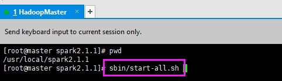
就可以看到Master、Worker了
Web界面
打开浏览器看一下
提交任务
执行官方案例
|
bin/spark-submit
--class
org.apache.spark.examples.SparkPi --master spark://master:7077
--executor-memory 1G --total-executor-cores
2 ./examples/jars/spark-examples_2.11-2.1.1.jar 100 |
--class 是执行哪个类
--master 提交给哪个集群
--executor-memory 指定执行器的内存
--total-executor-cores 指定执行器的核数
./examples/jars/spark-examples_2.11-2.1.1.jar
是SparkPi在哪个jar包，叫application-jar参数
100 是SparkPi的参数，叫application-arguments参数
算出来的Pi的结果，准确度不高
交互式
不指定--master，则默认使用local模式
创建一个测试文件，注意，该测试文件Master、Worker都要持有，否则可能会找不到该文件
计算单词出现的次数。spark-shell在哪个目录启动，相对路径就默认是当前的目录
|
sc.textFile("./word.txt").flatMap(_.split("
")).map((_,1)).reduceByKey(_+_).collect |
spark-submit的参数
--master的参数
Yarn模式，两个参数结合用
yarn-client与yarn-cluster的区别在于Driver运行在哪里，Driver运行在当前提交的节点上就是client，Driver随机运行在一个节点，按资源来分配就是cluster
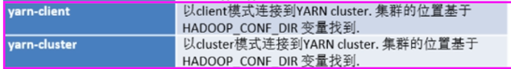
不带--master，可以看到是local[*]模式
HA配置
启动Zookeeper集群
编辑spark-env.sh
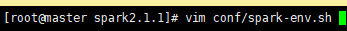
就是这个配置
都添加，zk集群不指定端口也行，dir是zk存放spark的数据
既然是高可用，那就把单机去掉
重启spark集群，在master主机启动
然后在任意一台slave单起一个master
访问master:8080，可以看到master是活跃的
访问slave1:8080，slave1是standby的
spark-shell指定master的参数可以两个master一起指定
指行前面的例子，都是正常的
杀掉活跃的Master

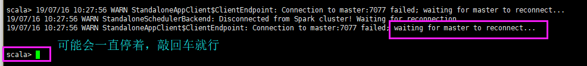
还是能执行
访问web页面
master主机上重新启动Master
变回了standby了
看一眼zk集群的数据
JobHistoryServer配置
进入spark-shell会有一个WebUI的入口可以查看
访问http://192.168.56.100:4040
发现是空的
执行上面的官方案例，要停掉spark-shell（spark-shell与spark-submit不要同时运行，否则webUI的端口会变）
快速访问页面，不断就能看到任务，任务执行完就无法看到了
http://192.168.56.100:4040 就是历史服务，但是任务执行完就没有了，下面配置永久保存历史。
编辑spark-defaults.conf
在master主机启动HDFS集群

创建历史存放的目录
编辑spark-env.sh
然后执行前面的例子
等待执行结束
访问历史服务的时候，发现是访问不了的
配置完历史服务之后，跑完程序之后才开历史服务，看看任务是否保存下来了没有，即使不开历史服务
访问
这可以看出来，启动历史服务是为了在Web查看的，不启动也不影响把历史保存起来。
Yarn模式
Yarn模式要做HA就要做Yarn的HA。
编辑/usr/local/hadoop/etc/hadoop/yarn-site.xml
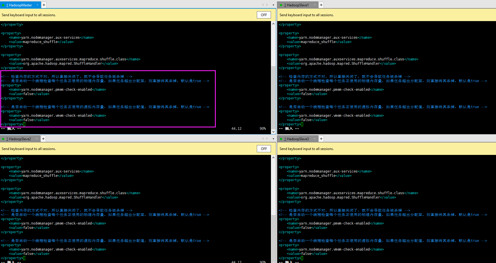
|
<!-- 检查内存的方式不对，所以直接关闭了，就不会导致任务被杀掉 --> <!-- 是否启动一个线程检查每个任务正使用的物理内存量，如果任务超出分配至，则直接将其杀掉，默认是true --> <property>
<name>yarn.nodemanager.pmem-check-enabled</name>
<value>false</value> </property> <!-- 是否启动一个线程检查每个任务正使用的虚拟内存量，如果任务超出分配值，则直接将其杀掉，默认是true --> <property>
<name>yarn.nodemanager.vmem-check-enabled</name>
<value>false</value> </property> |
启动yarn集群
编辑spark-env.sh
配置Yarn的conf目录，Hadoop的conf目录可以不配置的，只是一个默认路径而已，后面说。而且YARN_CONF_DIR的配置不需要四台服务器都配上，只在一台机器上配置也行，这是用来给提交spark程序给yarn的。
执行一下例子
|
bin/spark-submit
--class org.apache.spark.examples.SparkPi --master
yarn --deploy-mode client ./examples/jars/spark-examples_2.11-2.1.1.jar 100 |
可以看到执行结果
Standalone、Yarn等模式可以同时运行，执行的时候指定给谁执行就谁执行。
运行模式只是集群的管理者不同。
HADOOP_CONF_DIR的作用：
默认路径就变成了HDFS的了，要指定本地的文件就要用file:///usr/local/spark...
运行模式
这个Client就是spark-submit，总有人要执行这个命令，执行个spark-submit的就是Client。submit（提交）的就是代码。
就是这个spark-submit

IDEA环境应用
Scala环境
新建scala目录，要设置为对应的Sources Root、Resources Root
搜索插件
下不了去官网下载https://plugins.jetbrains.com/plugin/1347-scala/versions
然后手动从磁盘安装插件
重启
重启之后等待更新
选择Scala SDK
下载
下载完成
然后就可以新建Scala文件了，如果提示SDK没有，按照提示走就行。
代码
两个jar包，一个带依赖、一个不带
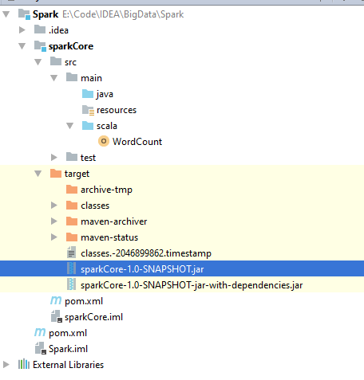
Spark的pom.xml
<?xml version="1.0" encoding="UTF-8"?> |
sparkCore的pom.xml
|
<?xml version="1.0" encoding="UTF-8"?> |
WordCount.scala
import org.apache.spark.{SparkConf, SparkContext} |
运行
上传jar包
本地执行试试
|
bin/spark-submit --class WordCount --master spark://master:7077
./sparkCore-1.0-SNAPSHOT.jar file:///usr/local/spark2.1.1/word.txt
file:///usr/local/spark2.1.1/out |
本地文件系统测试不行，看不到结果
那就用HDFS，put测试文件上去
使用HDFS的资源执行，注意输出结果的目录out不能已经存在，否则报错
|
bin/spark-submit --class WordCount --master spark://master:7077
./sparkCore-1.0-SNAPSHOT.jar hdfs://master:9000/word.txt
hdfs://master:9000/out |
看一眼word.txt
结果
结果内容
报错问题
1）执行程序的时候的报错：
java.lang.IllegalArgumentException:
requirement failed: Can only call getServletHandlers on a running MetricsSystem
这是因为之前高可用了，slave1主机现在作为了alive状态的Master，而master主机也有Master但是standby状态，连接集群--master又是连接master主机，就有了这种错误。kill掉slave1主机上的Master即可。
2）中途报错（但是这个报错并不影响结果的输出）：
19/07/17 15:09:57 ERROR server.TransportRequestHandler:
Error while invoking RpcHandler#receive() for one-way message.
org.apache.spark.SparkException:
Could not find AppClient.
at
org.apache.spark.rpc.netty.Dispatcher.postMessage(Dispatcher.scala:154)
at org.apache.spark.rpc.netty.Dispatcher.postOneWayMessage(Dispatcher.scala:134)
at
org.apache.spark.rpc.netty.NettyRpcHandler.receive(NettyRpcEnv.scala:570)
at
org.apache.spark.network.server.TransportRequestHandler.processOneWayMessage(TransportRequestHandler.java:180)
at org.apache.spark.network.server.TransportRequestHandler.handle(TransportRequestHandler.java:109)
at
org.apache.spark.network.server.TransportChannelHandler.channelRead(TransportChannelHandler.java:118)
at io.netty.channel.AbstractChannelHandlerContext.invokeChannelRead(AbstractChannelHandlerContext.java:367)
at
io.netty.channel.AbstractChannelHandlerContext.invokeChannelRead(AbstractChannelHandlerContext.java:353)
at
io.netty.channel.AbstractChannelHandlerContext.fireChannelRead(AbstractChannelHandlerContext.java:346)
at
io.netty.handler.timeout.IdleStateHandler.channelRead(IdleStateHandler.java:266)
at
io.netty.channel.AbstractChannelHandlerContext.invokeChannelRead(AbstractChannelHandlerContext.java:367)
at io.netty.channel.AbstractChannelHandlerContext.invokeChannelRead(AbstractChannelHandlerContext.java:353)
at
io.netty.channel.AbstractChannelHandlerContext.fireChannelRead(AbstractChannelHandlerContext.java:346)
at
io.netty.handler.codec.MessageToMessageDecoder.channelRead(MessageToMessageDecoder.java:102)
at
io.netty.channel.AbstractChannelHandlerContext.invokeChannelRead(AbstractChannelHandlerContext.java:367)
at
io.netty.channel.AbstractChannelHandlerContext.invokeChannelRead(AbstractChannelHandlerContext.java:353)
at io.netty.channel.AbstractChannelHandlerContext.fireChannelRead(AbstractChannelHandlerContext.java:346)
at
org.apache.spark.network.util.TransportFrameDecoder.channelRead(TransportFrameDecoder.java:85)
at
io.netty.channel.AbstractChannelHandlerContext.invokeChannelRead(AbstractChannelHandlerContext.java:367)
at
io.netty.channel.AbstractChannelHandlerContext.invokeChannelRead(AbstractChannelHandlerContext.java:353)
at
io.netty.channel.AbstractChannelHandlerContext.fireChannelRead(AbstractChannelHandlerContext.java:346)
at io.netty.channel.DefaultChannelPipeline$HeadContext.channelRead(DefaultChannelPipeline.java:1294)
at
io.netty.channel.AbstractChannelHandlerContext.invokeChannelRead(AbstractChannelHandlerContext.java:367)
at io.netty.channel.AbstractChannelHandlerContext.invokeChannelRead(AbstractChannelHandlerContext.java:353)
at
io.netty.channel.DefaultChannelPipeline.fireChannelRead(DefaultChannelPipeline.java:911)
at
io.netty.channel.nio.AbstractNioByteChannel$NioByteUnsafe.read(AbstractNioByteChannel.java:131)
at io.netty.channel.nio.NioEventLoop.processSelectedKey(NioEventLoop.java:652)
at
io.netty.channel.nio.NioEventLoop.processSelectedKeysOptimized(NioEventLoop.java:575)
at io.netty.channel.nio.NioEventLoop.processSelectedKeys(NioEventLoop.java:489)
at
io.netty.channel.nio.NioEventLoop.run(NioEventLoop.java:451)
at
io.netty.util.concurrent.SingleThreadEventExecutor$2.run(SingleThreadEventExecutor.java:140)
at io.netty.util.concurrent.DefaultThreadFactory$DefaultRunnableDecorator.run(DefaultThreadFactory.java:144)
at java.lang.Thread.run(Thread.java:745)
出现这个问题是因为资源问题，指定分配更多的内存、cores即可
|
bin/spark-submit --class WordCount --master spark://master:7077 --executor-memory 1G --total-executor-cores 2
./sparkCore-1.0-SNAPSHOT.jar hdfs://master:9000/word.txt
hdfs://master:9000/out2 |
本地调试
其他不变，就多一个文件
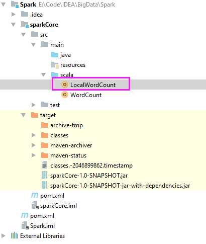
依赖范围要去掉
代码
LocalWordCount.scala
import org.apache.spark.{SparkConf, SparkContext} |
运行完，中间就会打印结果

debug的话，断点、debug运行，点击下图的
出来一个框
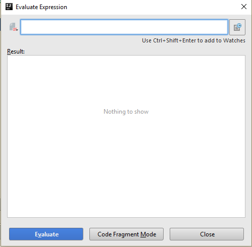
这样子就能看到结果啦，这种就是REPL的交互式
远程调试
改一下就行，记得要setJars，然后输入输出的路径改为HDFS即可，一般都不会这样操作。一般都是打jar包扔上去执行
Spark Core
RDD概述
RDD是什么
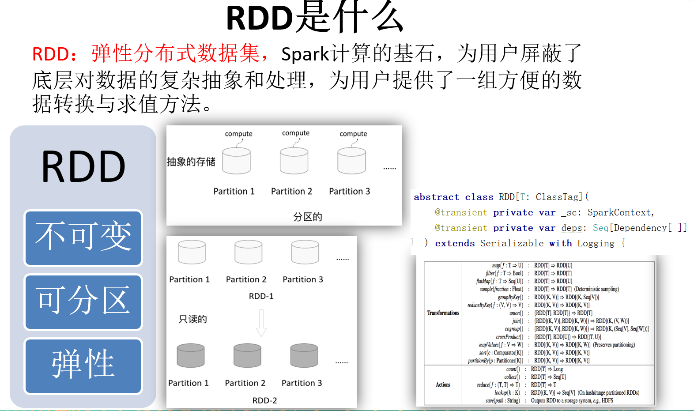
不可变：
经过算子textFile（textFile、flatMap、map方法就是算子），生成的lines就是不可变的，Scala中val就是不可变的，var才是可变的，经过算子之后，生成新的RDD，而不是对原有的RDD进行改变。
RDD的弹性表现
血统
下图就描述了Spark的血统，哪一块丢失了就从血统的上一个开始执行，都丢失了就从开头读文件开始，这是因为Spark是基于内存计算了，不适合做副本。
管这个血统叫DAG（即有向无环图）
上图是之前的代码
RDD都做了什么
RDD为用户提供了一组方便的数据转换与求值方法，即如何处理数据，经过算子之前的数据是怎么样的，经过算子之后变成了什么样的。
RDD的创建

makeRDD
SparkContext.scala的源码
这就创建了一个RDD
parallelize
SparkContext.scala的源码
跟makeRDD一样
可以指定分片
分片默认用核数
指定分片
RDD的转换
map(func)
RDD.scala源码
map应用于每个数据
mapPartitions(func)
类似于map，但独立地在RDD的每一个分片上运行，因此在类型为T的RDD上运行时，func的函数类型必须是Iterator[T] =>
Iterator[U]。假设有N个元素，有M个分区，那么map的函数的将被调用N次,而mapPartitions被调用M次,一个函数一次处理所有分区。尽量使用mapPartitions。
一个分区的情况
两个分区的
Scala的省略问题：

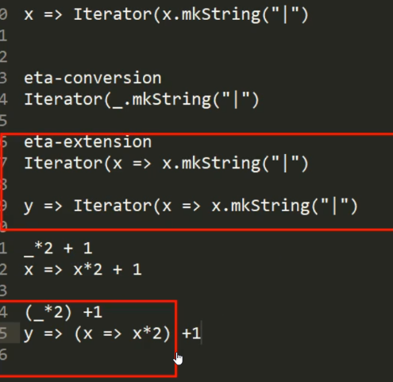
Driver与Executor
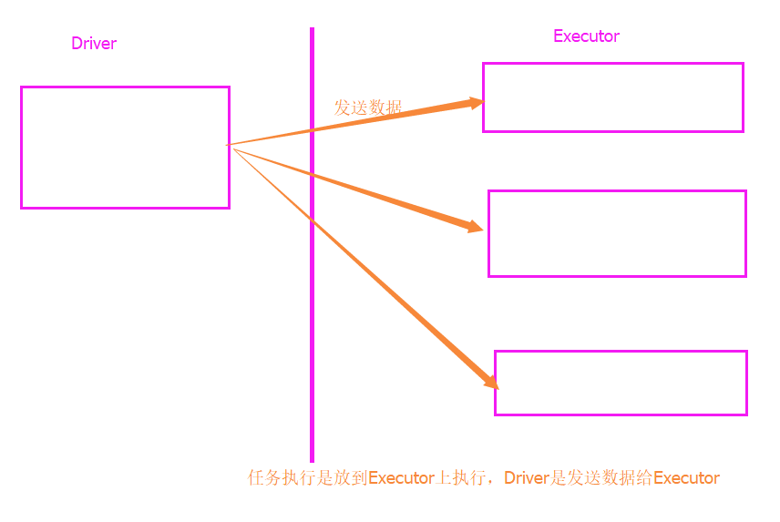
glom
将每一个分区形成一个数组，形成新的RDD类型时RDD[Array[T]]
scala> val rdd = sc.parallelize(1 to 16,4)
rdd: org.apache.spark.rdd.RDD[Int] =
ParallelCollectionRDD[65] at parallelize at <console>:24
scala> rdd.glom().collect()
res25: Array[Array[Int]] = Array(Array(1, 2, 3, 4), Array(5,
6, 7, 8), Array(9, 10, 11, 12), Array(13, 14, 15, 16))
flatMap(func) -- map后再扁平化
类似于map，但是每一个输入元素可以被映射为0或多个输出元素（所以func应该返回一个序列，而不是单一元素）
scala> var rdd = sc.makeRDD(Array(1,2,3,4,5))
rdd: org.apache.spark.rdd.RDD[Int] = ParallelCollectionRDD[7] at
makeRDD at <console>:24
scala> rdd.map(_+1).collect
res12: Array[Int] = Array(2, 3, 4, 5, 6)
scala> rdd.flatMap(x => Array(x + 1)).collect
res13: Array[Int] = Array(2, 3, 4, 5, 6)
filter(func)
返回一个新的RDD，该RDD由经过func函数计算后返回值为true的输入元素组成
scala> var sourceFilter =
sc.parallelize(Array("xiaoming","xiaojiang","xiaohe","dazhi"))
sourceFilter: org.apache.spark.rdd.RDD[String] =
ParallelCollectionRDD[10] at parallelize at <console>:24
scala> val filter = sourceFilter.filter(_.contains("xiao"))
filter: org.apache.spark.rdd.RDD[String] = MapPartitionsRDD[11] at
filter at <console>:26
scala> sourceFilter.collect()
res9: Array[String] = Array(xiaoming, xiaojiang, xiaohe, dazhi)
scala> filter.collect()
res10: Array[String] = Array(xiaoming, xiaojiang, xiaohe)
mapPartitionsWithIndex(func)
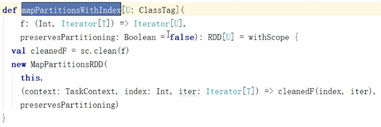
类似于mapPartitions，但func带有一个整数参数表示分片的索引值，因此在类型为T的RDD上运行时，func的函数类型必须是(Int,
Interator[T]) => Iterator[U]
|
scala> var rdd =
sc.makeRDD(Array(1,2,3,4,5),2) rdd: org.apache.spark.rdd.RDD[Int] =
ParallelCollectionRDD[14] at makeRDD at <console>:24 scala> rdd.partitions.size res20: Int = 2 // 拿出分区号，x是分区号。0:、1:是分区号 scala> rdd.mapPartitionsWithIndex((x,y)
=> Iterator(x+":"+y.mkString("|"))).collect res21: Array[String] = Array(0:1|2, 1:3|4|5) |
|
scala>
sc.makeRDD(Array(1,2,3,4),5).mapPartitionsWithIndex((x,y) =>
Iterator(x+":"+y.mkString("|"))).collect res19: Array[String] = Array(0:, 1:1, 2:2, 3:3,
4:4) |
sample(withReplacement, fraction, seed)

以指定的随机种子随机抽样出数量为fraction的数据，withReplacement表示是抽出的数据是否放回，true为有放回的抽样，false为无放回的抽样，seed用于指定随机数生成器种子。例如从RDD中随机且有放回的抽出50%的数据，随机种子值为3（即可能以1 2 3的其中一个为起始值）
scala> val rdd = sc.parallelize(1 to 10)
rdd: org.apache.spark.rdd.RDD[Int] = ParallelCollectionRDD[20] at
parallelize at <console>:24
scala> rdd.collect()
res15: Array[Int] = Array(1, 2, 3, 4, 5, 6, 7, 8, 9, 10)
// 大概抽40%，不是准确的
scala> var sample1 = rdd.sample(true,0.4,2)
sample1: org.apache.spark.rdd.RDD[Int] =
PartitionwiseSampledRDD[21] at sample at <console>:26
// 有放回即有重复的
scala> sample1.collect()
res16: Array[Int] = Array(1, 2, 2, 7, 7, 8, 9)
scala> var sample2 = rdd.sample(false,0.2,3)
sample2: org.apache.spark.rdd.RDD[Int] =
PartitionwiseSampledRDD[22] at sample at <console>:26
scala> sample2.collect()
res17: Array[Int] = Array(1, 9)
distinct([numTasks]))
对源RDD进行去重后返回一个新的RDD. 默认情况下，只有8个并行任务来操作，但是可以传入一个可选的numTasks参数改变它。
scala> val rdd = sc.parallelize(Array(1,1,2))
rdd: org.apache.spark.rdd.RDD[Int] = ParallelCollectionRDD[16] at
parallelize at <console>:24
scala> rdd.distinct.collect
res22: Array[Int] = Array(1, 2)
coalesce(numPartitions)
每个分区就是一个并行度，如果一个分区太大而处理的数据太少，即每个并行度处理的数据太少，效率就不高，故可以缩减分区，把单个分区的数据增加，并行处理的数据就会多一些。
参数Boolean：false只在Executor内部缩减，true发送数据到其他Executor进行缩减，即true的时候会触发Shuffle。
与repartition的区别: repartition(numPartitions:Int):RDD[T]和coalesce(numPartitions:Int，shuffle:Boolean=false):RDD[T] repartition只是coalesce接口中shuffle为true的实现.
缩减分区数，用于大数据集过滤后，提高小数据集的执行效率。
scala> val rdd = sc.parallelize(1 to 16,4)
rdd: org.apache.spark.rdd.RDD[Int] = ParallelCollectionRDD[54] at
parallelize at <console>:24
scala> rdd.partitions.size
res20: Int = 4
scala> val coalesceRDD = rdd.coalesce(3)
coalesceRDD: org.apache.spark.rdd.RDD[Int] = CoalescedRDD[55] at
coalesce at <console>:26
scala> coalesceRDD.partitions.size
res21: Int = 3
重分区：
1、由多变少（变的不多），使用coalesce，默认不进行Shuffle。但是由很多变成很少的时候，建议开启Shuffle，可以提高性能；
2、由少变多，必须开启Shuffle，如果使用coalesce的默认情况，则本次分区无效。
repartition(numPartitions)
重分区触发Shuffle，是coalesce的一种特例。
根据分区数，从新通过网络随机洗牌所有数据。
scala> val rdd = sc.parallelize(1 to 16,4)
rdd: org.apache.spark.rdd.RDD[Int] = ParallelCollectionRDD[56] at
parallelize at <console>:24
scala> rdd.partitions.size
res22: Int = 4
scala> val rerdd = rdd.repartition(2)
rerdd: org.apache.spark.rdd.RDD[Int] = MapPartitionsRDD[60] at
repartition at <console>:26
scala> rerdd.partitions.size
res23: Int = 2
scala> val rerdd = rdd.repartition(4)
rerdd: org.apache.spark.rdd.RDD[Int] = MapPartitionsRDD[64] at
repartition at <console>:26
scala> rerdd.partitions.size
res24: Int = 4
repartitionAndSortWithinPartitions(partitioner)
repartitionAndSortWithinPartitions函数是repartition函数的变种，与repartition函数不同的是，repartitionAndSortWithinPartitions在给定的partitioner内部（分区内排序）进行排序，性能比repartition要高。
sortBy(func,[ascending], [numTasks])
用func先对数据进行处理，按照处理后的数据比较结果排序。
scala> val rdd = sc.makeRDD(Array(1,1,2))
rdd: org.apache.spark.rdd.RDD[Int] = ParallelCollectionRDD[23] at
makeRDD at <console>:24
scala> rdd.sortBy(_*2).collect
res24: Array[Int] = Array(1, 1, 2)
scala> rdd.sortBy(_*2,false).collect
res25: Array[Int] = Array(2, 1, 1)
union(otherDataset)
对源RDD和参数RDD求并集后返回一个新的RDD 不去重
scala> val rdd1 = sc.parallelize(1 to 5)
rdd1: org.apache.spark.rdd.RDD[Int] = ParallelCollectionRDD[23] at
parallelize at <console>:24
scala> val rdd2 = sc.parallelize(5 to 10)
rdd2: org.apache.spark.rdd.RDD[Int] = ParallelCollectionRDD[24] at
parallelize at <console>:24
scala> val rdd3 = rdd1.union(rdd2)
rdd3: org.apache.spark.rdd.RDD[Int] = UnionRDD[25] at union at
<console>:28
scala> rdd3.collect()
res18: Array[Int] = Array(1, 2, 3, 4, 5, 5, 6,
7, 8, 9, 10)
subtract (otherDataset)
计算差的一种函数，去除两个RDD中相同的元素，不同的RDD将保留下来
scala> val rdd = sc.parallelize(3 to 8)
rdd: org.apache.spark.rdd.RDD[Int] = ParallelCollectionRDD[70] at
parallelize at <console>:24
scala> val rdd1 = sc.parallelize(1 to 5)
rdd1: org.apache.spark.rdd.RDD[Int] = ParallelCollectionRDD[71] at
parallelize at <console>:24
// 从rdd从去除rdd与rdd1共有的数据，如果反过来结果将不一样
scala> rdd.subtract(rdd1).collect()
res27: Array[Int] = Array(8, 6, 7)
intersection(otherDataset)
对源RDD和参数RDD求交集后返回一个新的RDD
scala> val rdd1 = sc.parallelize(1 to 7)
rdd1: org.apache.spark.rdd.RDD[Int] = ParallelCollectionRDD[26] at
parallelize at <console>:24
scala> val rdd2 = sc.parallelize(5 to 10)
rdd2: org.apache.spark.rdd.RDD[Int] = ParallelCollectionRDD[27] at
parallelize at <console>:24
scala> val rdd3 = rdd1.intersection(rdd2)
rdd3: org.apache.spark.rdd.RDD[Int] = MapPartitionsRDD[33] at
intersection at <console>:28
scala> rdd3.collect()
res19: Array[Int] = Array(5, 6, 7)
cartesian(otherDataset)
笛卡尔积，生产环境少用，因为k很多
scala> val rdd1 = sc.parallelize(1 to 3)
rdd1: org.apache.spark.rdd.RDD[Int] =
ParallelCollectionRDD[47] at parallelize at <console>:24
scala> val rdd2 = sc.parallelize(2 to 5)
rdd2: org.apache.spark.rdd.RDD[Int] =
ParallelCollectionRDD[48] at parallelize at <console>:24
scala> rdd1.cartesian(rdd2).collect()
res17: Array[(Int, Int)] = Array((1,2), (1,3), (1,4),
(1,5), (2,2), (2,3), (2,4), (2,5), (3,2), (3,3), (3,4), (3,5))
pipe(command, [envVars])
调用一个脚本
管道，对于每个分区，都执行一个perl或者shell脚本，返回输出的RDD
在shell启动的当前目录下新建一个pipe.sh脚本。">>>"${LINE}是对于每一条传递来的数据前面添加“>>>”
|
#!/bin/sh echo "AA" while read LINE; do echo
">>>"${LINE} done |
如果没有权限，则：chmod 777 pipe.sh
scala> val rdd = sc.parallelize(List("hi","Hello","how","are","you"),1)
rdd: org.apache.spark.rdd.RDD[String] = ParallelCollectionRDD[50]
at parallelize at <console>:24
scala> rdd.pipe("/usr/local/spark2.1.1/pipe.sh").collect()
res18: Array[String] = Array(AA, >>>hi, >>>Hello,
>>>how, >>>are, >>>you)
scala> val rdd =
sc.parallelize(List("hi","Hello","how","are","you"),2)
rdd: org.apache.spark.rdd.RDD[String] = ParallelCollectionRDD[52]
at parallelize at <console>:24
// 两个分区就打印两个AA
scala> rdd.pipe("/usr/local/spark2.1.1/pipe.sh").collect()
res19: Array[String] = Array(AA, >>>hi,
>>>Hello, AA,
>>>how, >>>are, >>>you)
两种类型的RDD
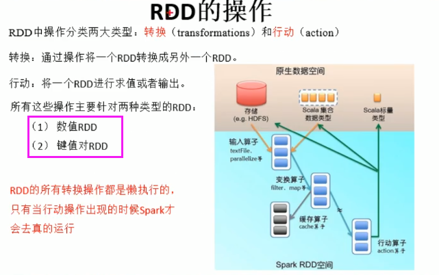
前面的都是数值RDD（例如：RDD[Int]），后面的都是键值对RDD（例如：RDD[K,V]）
键值对（K、V类型）RDD可以用下面的这些方法，也可以用前面的数值RDD的方法，因为键值对RDD也是数值RDD的一种，只是一个二元组而已，但是数值RDD不能用键值对RDD的算子。
partitionBy
Partitioner抽象类有两个参数
HashPartitioner是实现类
构造方法可以传递一个Int参数
对RDD进行分区操作，如果原有的partionRDD和现有的partionRDD是一致的话就不进行分区， 否则会生成ShuffleRDD。
scala> val rdd = sc.parallelize(Array(1,2,3,4,5))
rdd: org.apache.spark.rdd.RDD[Int] = ParallelCollectionRDD[20] at
parallelize at <console>:24
// map((_,1))是为了转成二元组
scala> rdd.map((_,1)).partitionBy(new
org.apache.spark.HashPartitioner(4)).partitions.size
res23: Int = 4
join(otherDataset, [numTasks])
相同的key进行内连接。
PairRDDFunctions.scala源码
在类型为(K,V)和(K,W)的RDD上调用，返回一个相同key对应的所有元素对在一起的(K,(V,W))的RDD
scala> val rdd = sc.parallelize(Array((1,"a"),(2,"b"),(3,"c")))
rdd: org.apache.spark.rdd.RDD[(Int, String)] =
ParallelCollectionRDD[32] at parallelize at <console>:24
scala> val rdd1 = sc.parallelize(Array((1,4),(2,5),(3,6)))
rdd1: org.apache.spark.rdd.RDD[(Int, Int)] = ParallelCollectionRDD[33]
at parallelize at <console>:24
// 相同的k，值放一起
scala> rdd.join(rdd1).collect()
res13: Array[(Int, (String, Int))] = Array((1,(a,4)), (2,(b,5)),
(3,(c,6)))
cogroup(otherDataset, [numTasks])
在类型为(K,V)和(K,W)的RDD上调用，返回一个(K,(Iterable<V>,Iterable<W>))类型的RDD
scala> val rdd =
sc.parallelize(Array((1,"a"),(2,"b"),(3,"c")))
rdd: org.apache.spark.rdd.RDD[(Int, String)] =
ParallelCollectionRDD[37] at parallelize at <console>:24
scala> val rdd1 = sc.parallelize(Array((1,4),(2,5),(3,6)))
rdd1: org.apache.spark.rdd.RDD[(Int, Int)] =
ParallelCollectionRDD[38] at parallelize at <console>:24
// value用CompactBuffer包装
scala> rdd.cogroup(rdd1).collect()
res14: Array[(Int, (Iterable[String], Iterable[Int]))] = Array((1,(CompactBuffer(a),CompactBuffer(4))),
(2,(CompactBuffer(b),CompactBuffer(5))),
(3,(CompactBuffer(c),CompactBuffer(6))))
scala> val rdd2 = sc.parallelize(Array((4,4),(2,5),(3,6)))
rdd2: org.apache.spark.rdd.RDD[(Int, Int)] = ParallelCollectionRDD[41]
at parallelize at <console>:24
scala> rdd.cogroup(rdd2).collect()
res15: Array[(Int, (Iterable[String], Iterable[Int]))] =
Array((4,(CompactBuffer(),CompactBuffer(4))),
(1,(CompactBuffer(a),CompactBuffer())),
(2,(CompactBuffer(b),CompactBuffer(5))), (3,(CompactBuffer(c),CompactBuffer(6))))
scala> val rdd3 =
sc.parallelize(Array((1,"a"),(1,"d"),(2,"b"),(3,"c")))
rdd3: org.apache.spark.rdd.RDD[(Int, String)] =
ParallelCollectionRDD[44] at parallelize at <console>:24
// 没有值就为空CompactBuffer()
scala> rdd3.cogroup(rdd2).collect()
res16: Array[(Int, (Iterable[String], Iterable[Int]))] =
Array((4,(CompactBuffer(),CompactBuffer(4))), (1,(CompactBuffer(d,
a),CompactBuffer())), (2,(CompactBuffer(b),CompactBuffer(5))),
(3,(CompactBuffer(c),CompactBuffer(6))))
reduceByKey(func, [numTasks])
reduceByKey会先预聚合（没有预聚合就是没有在内部把相同的key先合并），然后再Shuffle，而groupByKey直接就Shuffle了，预聚合之后再进行Shuffle（重新洗牌，需要在多个节点之间传输），可以减少数据的传输。
在一个(K,V)的RDD上调用，返回一个(K,V)的RDD，使用指定的reduce函数，将相同key的值聚合到一起，reduce任务的个数可以通过第二个可选的参数来设置。
scala> val rdd = sc.parallelize(List(("female",1),("male",5),("female",5),("male",2)))
rdd: org.apache.spark.rdd.RDD[(String, Int)] =
ParallelCollectionRDD[46] at parallelize at <console>:24
scala> val reduce = rdd.reduceByKey((x,y) => x+y)
reduce: org.apache.spark.rdd.RDD[(String, Int)] = ShuffledRDD[47]
at reduceByKey at <console>:26
scala> reduce.collect()
res29: Array[(String, Int)] = Array((female,6), (male,7))
groupByKey
groupByKey也是对每个key进行操作，但只生成一个sequence。
combineByKey[C]

( createCombiner: V => C, mergeValue: (C, V) => C, mergeCombiners: (C, C) => C)
对相同K，把V合并成一个集合。
参数：
createCombiner（分区内使用，第一次遇到某key时）: combineByKey() 会遍历分区中的所有元素，因此每个元素的键要么还没有遇到过，要么就 和之前的某个元素的键相同。如果这是一个新的元素,combineByKey() 会使用一个叫作 createCombiner()
的函数来创建
那个键对应的累加器的初始值
mergeValue（分区内使用，非第一次遇到某key时）: 如果这是一个在处理当前分区之前已经遇到的键， 它会使用 mergeValue() 方法将该键的累加器对应的当前值与这个新的值进行合并
mergeCombiners（将多个分区的结果进行合并）: 由于每个分区都是独立处理的， 因此对于同一个键可以有多个累加器。如果有两个或者更多的分区都有对应同一个键的累加器， 就需要使用用户提供的 mergeCombiners()
方法将各个分区的结果进行合并。
一张图解析清楚：
scala> val scores =
sc.parallelize(Array(("a",30),("a",40),("b",15),("a",20),("b",20),("b",30),("c",50),("b",20),("c",50)),3)
scores: org.apache.spark.rdd.RDD[(String, Int)] =
ParallelCollectionRDD[30] at parallelize at <console>:24
// x => (x,1)创建，名称在前分数在后；j+i._1这是分数（第一次出现的取第二位与已经出现过的取第一位相加），i._2+1是次数；x._1+y._1分数相加，x._2+y._2次数相加
scala> scores.combineByKey(x => (x,1),(i:(Int,Int),j)
=> (j+i._1,i._2+1),(x:(Int,Int),y:(Int,Int))
=> (x._1+y._1,x._2+y._2)).collect
res26: Array[(String, (Int, Int))] = Array((c,(100,2)), (a,(90,3)),
(b,(85,4)))
aggregateByKey
参数比较特殊，有zeroValue-U、Partitioner、(U,V)、(U,U)
(zeroValue:U,[partitioner: Partitioner]) (seqOp:
(U, V) => U,combOp: (U, U) => U)
在kv对的RDD中，，按key将value进行分组合并，合并时，将每个value和初始值作为seq函数的参数，进行计算，返回的结果作为一个新的kv对，然后再将结果按照key进行合并，最后将每个分组的value传递给combine函数进行计算（先将前两个value进行计算，将返回结果和下一个value传给combine函数，以此类推），将key与计算结果作为一个新的kv对输出。
seqOp函数用于在每一个分区中用初始值逐步迭代value，combOp函数用于合并每个分区中的结果。
scala> val scores =
sc.parallelize(Array(("a",30),("a",40),("b",15),("a",20),("b",20),("b",30),("c",50),("b",20),("c",50)),3)
scores: org.apache.spark.rdd.RDD[(String, Int)] =
ParallelCollectionRDD[30] at parallelize at <console>:24
scala> scores.aggregateByKey((0,0))((u,v) =>
(u._1+v,u._2+1),(u1,u2) => (u1._1+u2._1,u1._2+u2._2)).collect
res27: Array[(String, (Int, Int))] = Array((c,(100,2)), (a,(90,3)),
(b,(85,4)))
// 改变zeroValue的值、分区的值
scala> scores.aggregateByKey((1,0))((u,v) =>
(u._1+v,u._2+1),(u1,u2) => (u1._1+u2._1,u1._2+u2._2)).collect
res28: Array[(String, (Int, Int))] = Array((c,(101,2)), (a,(92,3)),
(b,(88,4)))
scala> scores.aggregateByKey((1,3))((u,v) =>
(u._1+v,u._2+1),(u1,u2) => (u1._1+u2._1,u1._2+u2._2)).collect
res29: Array[(String, (Int, Int))] = Array((c,(101,5)), (a,(92,9)),
(b,(88,13)))
foldByKey
其实是调用aggregateByKey
(zeroValue: V)(func: (V, V) => V): RDD[(K, V)]
aggregateByKey的简化操作，seqop和combop相同
scala> val rdd = sc.parallelize(List((1,3),(1,2),(1,4),(2,3),(3,6),(3,8)),3)
rdd: org.apache.spark.rdd.RDD[(Int, Int)] =
ParallelCollectionRDD[91] at parallelize at <console>:24
scala> val agg = rdd.foldByKey(0)(_+_)
agg: org.apache.spark.rdd.RDD[(Int, Int)] = ShuffledRDD[92] at
foldByKey at <console>:26
scala> agg.collect()
res61: Array[(Int, Int)] = Array((3,14), (1,9), (2,3))
sortByKey([ascending], [numTasks])
在一个(K,V)的RDD上调用，K必须实现Ordered接口，返回一个按照key进行排序的(K,V)的RDD
scala> val rdd =
sc.parallelize(Array((3,"aa"),(6,"cc"),(2,"bb"),(1,"dd")))
rdd: org.apache.spark.rdd.RDD[(Int, String)] =
ParallelCollectionRDD[14] at parallelize at <console>:24
scala> rdd.sortByKey(true).collect()
res9: Array[(Int, String)] = Array((1,dd), (2,bb), (3,aa), (6,cc))
scala> rdd.sortByKey(false).collect()
res10: Array[(Int, String)] = Array((6,cc), (3,aa), (2,bb), (1,dd))
mapValues
针对于(K,V)形式的类型只对V进行操作
scala> val rdd3 =
sc.parallelize(Array((1,"a"),(1,"d"),(2,"b"),(3,"c")))
rdd3: org.apache.spark.rdd.RDD[(Int, String)] = ParallelCollectionRDD[67]
at parallelize at <console>:24
scala> rdd3.mapValues(_+"|||").collect()
res26: Array[(Int, String)] = Array((1,a|||), (1,d|||), (2,b|||),
(3,c|||))
RDD的行动（Action）
行动操作最后是结果，不再是RDD。
reduce(func)
通过func函数聚集RDD中的所有元素，这个功能必须是可交换且可并联的
scala> val rdd1 = sc.makeRDD(1 to 10,2)
rdd1: org.apache.spark.rdd.RDD[Int] = ParallelCollectionRDD[85] at
makeRDD at <console>:24
scala> rdd1.reduce(_+_)
res50: Int = 55
scala> val rdd2 = sc.makeRDD(Array(("a",1),("a",3),("c",3),("d",5)))
rdd2: org.apache.spark.rdd.RDD[(String, Int)] =
ParallelCollectionRDD[86] at makeRDD at <console>:24
scala> rdd2.reduce((x,y)=>(x._1 + y._1,x._2 + y._2))
res51: (String, Int) = (adca,12)
collect()
在驱动程序中，以数组的形式返回数据集的所有元素
count()
返回RDD的元素个数
|
scala> val rdd = sc.makeRDD(Array(1,1,2)) rdd: org.apache.spark.rdd.RDD[Int] = ParallelCollectionRDD[23] at
makeRDD at <console>:24 scala> rdd.count res30: Long = 3 |
first()
返回RDD的第一个元素（类似于take(1)）
|
scala> val rdd = sc.makeRDD(Array(1,1,2)) rdd: org.apache.spark.rdd.RDD[Int] = ParallelCollectionRDD[23] at
makeRDD at <console>:24 scala> rdd.first res31: Int = 1 |
take(n)
返回一个由数据集的前n个元素组成的数组
|
scala> val rdd = sc.makeRDD(Array(1,1,2)) rdd: org.apache.spark.rdd.RDD[Int] = ParallelCollectionRDD[23] at
makeRDD at <console>:24 // 获取几个数据 scala> rdd.take(2) res32: Array[Int] = Array(1, 1) |
takeSample(withReplacement,num, [seed])
返回一个数组，该数组由从数据集中随机采样的num个元素组成，可以选择是否用随机数替换不足的部分，seed用于指定随机数生成器种子
takeOrdered(n)
返回前几个的排序
等价于这个
aggregate
(zeroValue: U)(seqOp: (U, T) ⇒ U, combOp: (U, U) ⇒ U)
aggregate函数将每个分区里面的元素通过seqOp和初始值进行聚合，然后用combine函数将每个分区的结果和初始值(zeroValue)进行combine操作。这个函数最终返回的类型不需要和RDD中元素类型一致。（|是交互式的换行）
scala> var rdd1 = sc.makeRDD(1 to 10,2)
rdd1: org.apache.spark.rdd.RDD[Int] = ParallelCollectionRDD[88] at
makeRDD at <console>:24
scala> rdd1.aggregate(1)(
| {(x : Int,y : Int)
=> x + y},
| {(a : Int,b : Int)
=> a + b}
| )
res56: Int = 58
scala> rdd1.aggregate(1)(
| {(x : Int,y : Int)
=> x * y},
| {(a : Int,b : Int)
=> a + b}
| )
res57: Int = 30361
fold(num)(func)
折叠操作，aggregate的简化操作，seqop和combop一样。
scala> var rdd1 = sc.makeRDD(1 to 4,2)
rdd1: org.apache.spark.rdd.RDD[Int] = ParallelCollectionRDD[90] at
makeRDD at <console>:24
scala> rdd1.aggregate(1)(
| {(x : Int,y : Int)
=> x + y},
| {(a : Int,b : Int)
=> a + b}
| )
res59: Int = 13
scala> rdd1.fold(1)(_+_)
res60: Int = 13
saveAsTextFile(path)
将数据集的元素以textfile的形式保存到HDFS文件系统或者其他支持的文件系统，对于每个元素，Spark将会调用toString方法，将它装换为文件中的文本
saveAsSequenceFile(path)
将数据集中的元素以Hadoop
sequencefile的格式保存到指定的目录下，可以使HDFS或者其他Hadoop支持的文件系统。
saveAsObjectFile(path)
用于将RDD中的元素序列化成对象，存储到文件中。
countByKey()
针对(K,V)类型的RDD，返回一个(K,Int)的map，表示每一个key对应的元素个数。
scala> val rdd =
sc.parallelize(List((1,3),(1,2),(1,4),(2,3),(3,6),(3,8)),3)
rdd: org.apache.spark.rdd.RDD[(Int, Int)] =
ParallelCollectionRDD[95] at parallelize at <console>:24
// key有几个
scala> rdd.countByKey()
res63: scala.collection.Map[Int,Long] = Map(3 -> 2, 1 -> 3, 2
-> 1)
// 或者
scala>
sc.parallelize(Array(1,1,2,3,3,3)).map((_,1)).countByKey()
res33: scala.collection.Map[Int,Long] = Map(1 -> 2, 3 -> 3, 2
-> 1)
一般操作，都是抽样出来（生产环境Key太多），然后用countByKey看一下key的分布情况，然后进行优化。
foreach(func)
在数据集的每一个元素上，运行函数func进行更新。
scala> val rdd = sc.makeRDD(Array(1,1,2))
rdd: org.apache.spark.rdd.RDD[Int] = ParallelCollectionRDD[23] at
makeRDD at <console>:24
scala> rdd.foreach(println)
1
1
2
RDD的数值统计操作
RDD的运行
RDD的依赖关系
宽依赖会触发Shuffle
RDD任务切分
每个Task会分发到具体的Executor去执行。
RDD的运行规划图
练习？
先搞清楚数据的变化，再填充算子
广告统计
1、统计每一个省份点击TOP3的广告
2、统计每一个省份每一个小时的TOP3的广告
访问统计
1、计算每一个IP的访问次数
2、计算每一个视频访问的IP数
3、计算每小时CDN的流量
RDD的持久化
cache方法其实就是persist方法，默认只持久化到内存
缓存的参数，注意，在存储级别的末尾加上“_2”来把持久化数据存为两份
缓存的东西容易丢失，丢失之后从血统恢复计算。缓存也是用LRU算法，满了就删除旧的缓存。
例子
|
scala> val rdd = sc.makeRDD(1 to 5) rdd: org.apache.spark.rdd.RDD[Int] = ParallelCollectionRDD[42] at
makeRDD at <console>:24 scala> val nocache = rdd.map(_.toString + "[" +
System.currentTimeMillis + "]") nocache: org.apache.spark.rdd.RDD[String] = MapPartitionsRDD[43]
at map at <console>:26 scala> val cache =
rdd.map(_.toString + "[" + System.currentTimeMillis +
"]") cache: org.apache.spark.rdd.RDD[String] = MapPartitionsRDD[44] at
map at <console>:26 // 只对cache做缓存 scala> cache.cache res43: cache.type = MapPartitionsRDD[44] at map at <console>:26 // 不做缓存的，每次的值都不一样 scala> nocache.collect res44: Array[String] = Array(1[1563691286182], 2[1563691286182],
3[1563691286182], 4[1563691286182], 5[1563691286182]) scala> nocache.collect res45: Array[String] = Array(1[1563691288320], 2[1563691288320],
3[1563691288320], 4[1563691288320], 5[1563691288320]) scala> nocache.collect res46: Array[String] = Array(1[1563691290109], 2[1563691290109],
3[1563691290109], 4[1563691290109], 5[1563691290109]) // 做缓存的每次的时间戳都是一样的 scala> cache.collect res47: Array[String] = Array(1[1563691298443], 2[1563691298443],
3[1563691298443], 4[1563691298443], 5[1563691298443]) scala> cache.collect res48: Array[String] = Array(1[1563691298443], 2[1563691298443], 3[1563691298443],
4[1563691298443], 5[1563691298443]) scala> cache.collect res49: Array[String] = Array(1[1563691298443], 2[1563691298443],
3[1563691298443], 4[1563691298443], 5[1563691298443]) |
RDD的检查点机制
这是把数据存入HDFS的，所以会把血统干掉，删掉存入HDFS的数据，就会报错。
启动HDFS集群
start-dfs.sh
在HDFS创建一个目录
|
scala>
sc.setCheckpointDir("hdfs"//master:9000/checkpoint") | |
) // 不知道为什么要多敲一个括号 scala> val ch1 = sc.parallelize(1 to 2) ch1: org.apache.spark.rdd.RDD[Int] = ParallelCollectionRDD[45]
at parallelize at <console>:24
^ scala> val ch2 = ch1.map(_.toString +
"[" + System.currentTimeMillis + "]") ch2: org.apache.spark.rdd.RDD[String] =
MapPartitionsRDD[46] at map at <console>:26 scala> val ch3 = ch1.map(_.toString +
"[" + System.currentTimeMillis + "]") ch3: org.apache.spark.rdd.RDD[String] =
MapPartitionsRDD[47] at map at <console>:26 scala> ch3.checkpoint // 不错检查点的，每次都不同 scala> ch2.collect res54: Array[String] = Array(1[1563694507999],
2[1563694507999]) scala> ch2.collect res55: Array[String] = Array(1[1563694511912],
2[1563694511912]) scala> ch2.collect res56: Array[String] = Array(1[1563694514370],
2[1563694514370]) // 做检查点之后，第一次与第二次不同，后面就都跟第二次一样了 scala> ch3.collect res57: Array[String] = Array(1[1563694521535],
2[1563694521535]) scala> ch3.collect res58: Array[String] = Array(1[1563694522483],
2[1563694522483]) scala> ch3.collect res59: Array[String] = Array(1[1563694522483],
2[1563694522483]) |
这是为了流式计算用的，流式计算中，每来一条数据就计算，计算的结果保存到HDFS上，这样下次启动直接从检查点开始，这样子前面计算的数据就不会丢失。
缓存只是一种优化策略。
键值对RDD数据分区
自定义分区继承Partitioner，要实现这俩方法
自定义分区代码
之前的项目，新加一个Scala的class文件
CustomerPartitioner.scala
import org.apache.spark.{Partitioner, SparkConf, SparkContext} |
测试
运行main方法
找日志，CPU是4核，所以默认4分区
自定义分区之后，是5个分区，注意有时候打印中间会有其他日志隔断
数据读取与保存
一般的，输入在sc调用，输出在RDD调用。
文本文件
当我们将一个文本文件读取为 RDD 时，输入的每一行 都会成为RDD的一个元素。也可以将多个完整的文本文件一次性读取为一个pair RDD， 其中键是文件名，值是文件内容。
val
input = sc.textFile("./README.md")
如果传递目录，则将目录下的所有文件读取作为RDD。
文件路径支持通配符。
通过wholeTextFiles()对于大量的小文件读取效率比较高，大文件效果没有那么高。
Spark通过saveAsTextFile() 进行文本文件的输出，该方法接收一个路径，并将 RDD 中的内容都输入到路径对应的文件中。Spark 将传入的路径作为目录对待，会在那个 目录下输出多个文件。这样，Spark 就可以从多个节点上并行输出了。
result.saveAsTextFile(outputFile)
scala> sc.textFile("./README.md")
res6: org.apache.spark.rdd.RDD[String] = ./README.md MapPartitionsRDD[7]
at textFile at <console>:25
scala> val readme = sc.textFile("./README.md")
readme: org.apache.spark.rdd.RDD[String] = ./README.md
MapPartitionsRDD[9] at textFile at <console>:24
scala> readme.collect()
res7: Array[String] = Array(# Apache Spark, "", Spark is
a fast and general cluster...
scala>
readme.saveAsTextFile("hdfs://master01:9000/test")
调用Hadoop底层的，就是对Hadoop的封装
hadoopFile
实现RDD的转换有如下方法
其实就调用了Hadoop 的底层
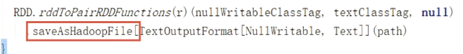
saveAsHadoopFile
JSON文件
一般用SparkSQL处理，因为它自带处理库。
如果JSON文件中每一行就是一个JSON记录，那么可以通过将JSON文件当做文本文件来读取，然后利用相关的JSON库对每一条数据进行JSON解析。
scala> import org.json4s._
import org.json4s._
scala> import org.json4s.jackson.JsonMethods._
import org.json4s.jackson.JsonMethods._
scala> import org.json4s.jackson.Serialization
import org.json4s.jackson.Serialization
scala> var result =
sc.textFile("examples/src/main/resources/people.json")
result: org.apache.spark.rdd.RDD[String] =
examples/src/main/resources/people.json MapPartitionsRDD[7] at textFile at
<console>:47
scala> implicit val formats =
Serialization.formats(ShortTypeHints(List()))
formats: org.json4s.Formats{val dateFormat: org.json4s.DateFormat;
val typeHints: org.json4s.TypeHints} =
org.json4s.Serialization$$anon$1@61f2c1da
scala> result.collect().foreach(x => {var c =
parse(x).extract[Person];println(c.name + "," + c.age)})
Michael,30
Andy,30
Justin,19
CSV文件
读取 CSV/TSV 数据和读取 JSON 数据相似，都需要先把文件当作普通文本文件来读取数据，然后通过将每一行进行解析实现对CSV的读取。
CSV/TSV数据的输出也是需要将结构化RDD通过相关的库转换成字符串RDD，然后使用 Spark 的文本文件 API 写出去。
Sequence文件
SequenceFile文件是Hadoop用来存储二进制形式的key-value对而设计的一种平面文件(Flat File)。
Spark 有专门用来读取 SequenceFile 的接口。在 SparkContext 中，可以调用 sequenceFile[
keyClass, valueClass](path)。
读取Sequence文件也要指定类型，但不需要括号。
对象文件
对象文件是将对象序列化后保存的文件，采用Java的序列化机制。可以通过objectFile[k,v](path)
函数接收一个路径，读取对象文件，返回对应的 RDD，也可以通过调用saveAsObjectFile()
实现对对象文件的输出。因为是序列化所以要指定类型。
scala> val data=sc.parallelize(List((2,"aa"),(3,"bb"),(4,"cc"),(5,"dd"),(6,"ee")))
data: org.apache.spark.rdd.RDD[(Int, String)] =
ParallelCollectionRDD[20] at parallelize at <console>:24
scala> data.saveAsObjectFile("hdfs://master01:9000/objfile")
scala> import org.apache.spark.rdd.RDD
import org.apache.spark.rdd.RDD
scala> val objrdd:RDD[(Int,String)] =
sc.objectFile[(Int,String)]("hdfs://master01:9000/objfile/p*")
objrdd: org.apache.spark.rdd.RDD[(Int, String)] =
MapPartitionsRDD[28] at objectFile at <console>:25
scala> objrdd.collect()
res20: Array[(Int, String)] = Array((2,aa), (3,bb), (4,cc), (5,dd),
(6,ee))
读取为对象，要指定对象类型，对象要用括号
HDFS
Spark的整个生态系统与Hadoop是完全兼容的,所以对于Hadoop所支持的文件类型或者数据库类型,Spark也同样支持.另外,由于Hadoop的API有新旧两个版本,所以Spark为了能够兼容Hadoop所有的版本,也提供了两套创建操作接口.对于外部存储创建操作而言,hadoopRDD和newHadoopRDD是最为抽象的两个函数接口,主要包含以下四个参数.
1）输入格式(InputFormat): 制定数据输入的类型,如TextInputFormat等,新旧两个版本所引用的版本分别是org.apache.hadoop.mapred.InputFormat和org.apache.hadoop.mapreduce.InputFormat(NewInputFormat)
2）键类型: 指定[K,V]键值对中K的类型
3）值类型: 指定[K,V]键值对中V的类型
4）分区值: 指定由外部存储生成的RDD的partition数量的最小值,如果没有指定,系统会使用默认值defaultMinSplits
其他创建操作的API接口都是为了方便最终的Spark程序开发者而设置的,是这两个接口的高效实现版本.例如,对于textFile而言,只有path这个指定文件路径的参数,其他参数在系统内部指定了默认值
兼容旧版本HadoopAPI的创建操作
|
文件路径 |
输入格式 |
键类型 |
值类型 |
分区值 |
|
|
textFile(path:
String, minPartitions: Int = defaultMinPartitions) |
path |
TextInputFormat |
LongWritable |
Text |
minSplits |
|
hadoopFile[K,
V, F <: InputFormat[K, V]](path: String, minPartitions: Int) |
path |
F |
K |
V |
minSplits |
|
hadoopFile[K,
V, F <: [K, V]](path: String) |
path |
F |
K |
V |
DefaultMinSplits |
|
hadoopFile[K,
V](path: String, inputFormatClass: Class[_ <: InputFormat[K, V]],
keyClass: Class[K], valueClass: Class[V], minPartitions: Int =
defaultMinPartitions): RDD[(K, V)] |
path |
inputFormatClass |
keyClass |
valueClass |
defaultMinPartitions |
|
hadoopRDD[K,
V](conf: JobConf, inputFormatClass: Class[_ <: InputFormat[K, V]],
keyClass: Class[K], valueClass: Class[V], minPartitions: Int =
defaultMinPartitions): RDD[(K, V)] |
n/a |
inputFormatClass |
keyClass |
valueClass |
defaultMinPartitions |
|
sequenceFile[K,
V](path: String, minPartitions: Int = defaultMinPartitions) |
path |
SequenceFileInputFormat[K,V] |
K |
V |
defaultMinPartitions |
|
objectFile[T](path:
String, minPartitions: Int = defaultMinPartitions)(implicit arg0:
ClassTag[T]): RDD[T] |
path |
SequenceFileInputFormat[NullWritable,BytesWritable] |
NullWritable |
BytesWritable |
minSplits |
兼容新版本HadoopAPI的创建操作
|
|
文件路径 |
输入格式 |
键类型 |
值类型 |
分区值 |
|
newAPIHadoopFile[K,
V, F <: InputFormat[K, V]](path: String, fClass: Class[F], kClass:
Class[K], vClass: Class[V], conf: Configuration = hadoopConfiguration):
RDD[(K, V)] |
path |
F |
K |
V |
n/a |
|
newAPIHadoopFile[K,
V, F <: InputFormat[K, V]](path: String)(implicit km: ClassTag[K], vm:
ClassTag[V], fm: ClassTag[F]): RDD[(K, V)] |
path |
F |
K |
V |
n/a |
|
newAPIHadoopRDD[K,
V, F <: InputFormat[K, V]](conf: Configuration = hadoopConfiguration,
fClass: Class[F], kClass: Class[K], vClass: Class[V]): RDD[(K, V)] |
n/a |
F |
K |
V |
n/a |
注意:
1.在Hadoop中以压缩形式存储的数据,不需要指定解压方式就能够进行读取,因为Hadoop本身有一个解压器会根据压缩文件的后缀推断解压算法进行解压.
2.如果用Spark从Hadoop中读取某种类型的数据不知道怎么读取的时候,上网查找一个使用map-reduce的时候是怎么读取这种这种数据的,然后再将对应的读取方式改写成上面的hadoopRDD和newAPIHadoopRDD两个类就行了
写出示例：
scala> val data = sc.parallelize(Array((30,"hadoop"),
(71,"hive"), (11,"cat")))
data: org.apache.spark.rdd.RDD[(Int, String)] =
ParallelCollectionRDD[47] at parallelize at <console>:35
scala> data.saveAsNewAPIHadoopFile("hdfs://hadoop102:9000/output4/",classOf[LongWritable]
,classOf[Text]
,classOf[org.apache.hadoop.mapreduce.lib.output.TextOutputFormat[LongWritable,
Text]])
对于RDD最后的归宿除了返回为集合和标量,也可以将RDD存储到外部文件系统或者数据库中,Spark系统与Hadoop是完全兼容的,所以MapReduce所支持的读写文件或者数据库类型,Spark也同样支持.另外,由于Hadoop的API有新旧两个版本,所以Spark为了能够兼容Hadoop所有的版本,也提供了两套API。
将RDD保存到HDFS中在通常情况下需要关注或者设置五个参数,即文件保存的路径,key值的class类型,Value值的class类型,RDD的输出格式(OutputFormat,如TextOutputFormat/SequenceFileOutputFormat),以及最后一个相关的参数codec(这个参数表示压缩存储的压缩形式,如DefaultCodec,Gzip,Codec等等)
兼容旧版API
|
saveAsObjectFile(path:
String): Unit |
|
saveAsTextFile(path:
String, codec: Class[_ <: CompressionCodec]): Unit |
|
saveAsTextFile(path:
String): Unit |
|
saveAsHadoopFile[F
<: OutputFormat[K, V]](path: String)(implicit fm: ClassTag[F]): Unit |
|
saveAsHadoopFile[F
<: OutputFormat[K, V]](path: String, codec: Class[_ <:
CompressionCodec])(implicit fm: ClassTag[F]): Unit |
|
saveAsHadoopFile(path:
String, keyClass: Class[_], valueClass: Class[_], outputFormatClass: Class[_
<: OutputFormat[_, _]], codec: Class[_ <: CompressionCodec]): Unit |
|
saveAsHadoopDataset(conf:
JobConf): Unit |
这里列出的API,前面6个都是saveAsHadoopDataset的简易实现版本,仅仅支持将RDD存储到HDFS中,而saveAsHadoopDataset的参数类型是JobConf,所以其不仅能够将RDD存储到HDFS中,也可以将RDD存储到其他数据库中,如Hbase,MangoDB,Cassandra等。
兼容新版API
|
saveAsNewAPIHadoopFile(path:
String, keyClass: Class[_], valueClass: Class[_], outputFormatClass: Class[_
<: OutputFormat[_, _]], conf: Configuration =
self.context.hadoopConfiguration): Unit |
|
saveAsNewAPIHadoopFile[F
<: OutputFormat[K, V]](path: String)(implicit fm: ClassTag[F]): Unit |
|
saveAsNewAPIHadoopDataset(conf:
Configuration): Unit |
同样的,前2个API是saveAsNewAPIHadoopDataset的简易实现,只能将RDD存到HDFS中,而saveAsNewAPIHadoopDataset比较灵活.新版的API没有codec的参数,所以要压缩存储文件到HDFS中每需要使用hadoopConfiguration参数,设置对应mapreduce.map.output.compress.codec参数和mapreduce.map.output.compress参数.
注意:如果不知道怎么将RDD存储到Hadoop生态的系统中,主要上网搜索一下对应的map-reduce是怎么将数据存储进去的,然后改写成对应的saveAsHadoopDataset或saveAsNewAPIHadoopDataset就可以了。
文件系统
Spark 支持读写很多种文件系统， 像本地文件系统、Amazon S3、HDFS等。
数据库
关系型数据库连接
SQL写法要有两个问号
这里两个值就拼接到SQL的两个问号
在spark-shell执行例子
导入MySQL驱动包，然后重新进入spark-shell
数据库上的数据
执行
|
val rdd = new org.apache.spark.rdd.JdbcRDD
( |
打印结果，这种方法从MySQL读取数据然后转成RDD的方法，太麻烦了，后面SparkSQL就方便了。
写代码实现
后面使用SparkSQL.
支持通过Java JDBC访问关系型数据库。需要通过JdbcRDD进行，示例如下:
Mysql读取：
def main (args: Array[String] ) {
val sparkConf = new
SparkConf ().setMaster ("local[2]").setAppName ("JdbcApp")
val sc = new SparkContext
(sparkConf)
val rdd = new org.apache.spark.rdd.JdbcRDD (
sc,
() => {
Class.forName
("com.mysql.jdbc.Driver").newInstance()
java.sql.DriverManager.getConnection
("jdbc:mysql://master:3306/rdd", "root", "password")
},
"select * from rddtable where id
>= ? and id <= ?;",
1,
10,
1,
r => (r.getInt(1),
r.getString(2)))
println (rdd.count () )
rdd.foreach (println (_) )
sc.stop ()
}
Mysql写入：（没有提供写出，要写类似于Java的代码）
def main(args: Array[String]) {
val sparkConf = new
SparkConf().setMaster("local[2]").setAppName("HBaseApp")
val sc = new SparkContext(sparkConf)
val data =
sc.parallelize(List("Female", "Male","Female"))
data.foreachPartition(insertData)
}
def insertData(iterator: Iterator[String]): Unit = {
Class.forName ("com.mysql.jdbc.Driver").newInstance()
val conn =
java.sql.DriverManager.getConnection("jdbc:mysql://master01:3306/rdd",
"root", "hive")
iterator.foreach(data => {
val ps =
conn.prepareStatement("insert into rddtable(name) values (?)")
ps.setString(1, data)
ps.executeUpdate()
})
}
JdbcRDD 接收这样几个参数。
• 首先，要提供一个用于对数据库创建连接的函数。这个函数让每个节点在连接必要的配 置后创建自己读取数据的连接。
• 接下来，要提供一个可以读取一定范围内数据的查询，以及查询参数中lowerBound和 upperBound 的值。这些参数可以让 Spark 在不同机器上查询不同范围的数据，这样就不 会因尝试在一个节点上读取所有数据而遭遇性能瓶颈。
• 这个函数的最后一个参数是一个可以将输出结果从转为对操作数据有用的格式的函数。如果这个参数空缺，Spark会自动将每行结果转为一个对象数组。
Cassandra数据库和ElasticSearch集成：
HBase数据库
就是控制HadoopFile的读写
由于
org.apache.hadoop.hbase.mapreduce.TableInputFormat 类的实现，Spark 可以通过Hadoop输入格式访问HBase。这个输入格式会返回键值对数据，其中键的类型为org.
apache.hadoop.hbase.io.ImmutableBytesWritable，而值的类型为org.apache.hadoop.hbase.client.Result。
HBase读取：
def main(args: Array[String]) {
val sparkConf = new
SparkConf().setMaster("local[2]").setAppName("HBaseApp")
val sc = new SparkContext(sparkConf)
val conf = HBaseConfiguration.create()
//HBase中的表名
conf.set(TableInputFormat.INPUT_TABLE,
"fruit")
val hBaseRDD = sc.newAPIHadoopRDD(conf,
classOf[TableInputFormat],
classOf[org.apache.hadoop.hbase.io.ImmutableBytesWritable],
classOf[org.apache.hadoop.hbase.client.Result])
val count = hBaseRDD.count()
println("hBaseRDD RDD
Count:"+ count)
hBaseRDD.cache()
hBaseRDD.foreach {
case (_, result) =>
val key =
Bytes.toString(result.getRow)
val name =
Bytes.toString(result.getValue("info".getBytes,
"name".getBytes))
val color =
Bytes.toString(result.getValue("info".getBytes,
"color".getBytes))
println("Row key:" + key
+ " Name:" + name + " Color:" + color)
}
sc.stop()
}
HBase写入：
def main(args: Array[String]) {
val sparkConf = new
SparkConf().setMaster("local[2]").setAppName("HBaseApp")
val sc = new SparkContext(sparkConf)
val conf = HBaseConfiguration.create()
val jobConf = new JobConf(conf)
jobConf.setOutputFormat(classOf[TableOutputFormat])
jobConf.set(TableOutputFormat.OUTPUT_TABLE,
"fruit_spark")
val fruitTable =
TableName.valueOf("fruit_spark")
val tableDescr = new
HTableDescriptor(fruitTable)
tableDescr.addFamily(new
HColumnDescriptor("info".getBytes))
val admin = new HBaseAdmin(conf)
if (admin.tableExists(fruitTable)) {
admin.disableTable(fruitTable)
admin.deleteTable(fruitTable)
}
admin.createTable(tableDescr)
def convert(triple: (Int, String, Int))
= {
val put = new
Put(Bytes.toBytes(triple._1))
put.addImmutable(Bytes.toBytes("info"),
Bytes.toBytes("name"), Bytes.toBytes(triple._2))
put.addImmutable(Bytes.toBytes("info"),
Bytes.toBytes("price"), Bytes.toBytes(triple._3))
(new ImmutableBytesWritable, put)
}
val initialRDD =
sc.parallelize(List((1,"apple",11), (2,"banana",12),
(3,"pear",13)))
val localData = initialRDD.map(convert)
localData.saveAsHadoopDataset(jobConf)
}
RDD编程进阶
累加器
累加器用来对信息进行聚合，通常在向 Spark 传递函数时，比如使用 map() 函数或者用 filter() 传条件时，可以使用驱 动器程序中定义的变量，但是集群中运行的每个任务都会得到这些变量的一份新的副本， 更新这些副本的值也不会影响驱动器中的对应变量。 如果我们想实现所有分片处理时更新共享变量的功能，那么累加器可以实现我们想要的效果。
用变量累加的问题
for循环模拟加法
这种方式累加是没有问题的，但是不经过Spark
/** |
在算子里面做累加
这就有问题了，因为执行结果为0
import org.apache.spark.{SparkConf, SparkContext} |
分析一下问题
所以要用系统累加器或者自定义累加器。
系统累加器
这就能实现了累加
import org.apache.spark.{SparkConf, SparkContext} |
分析
注意点：累加器不要写到转换算子里面，要写在行动算子里面。
累加器的用法如下所示。
通过在驱动器中调用SparkContext.accumulator(initialValue)方法，创建出存有初始值的累加器。返回值为
org.apache.spark.Accumulator[T] 对象，其中 T 是初始值 initialValue 的类型。Spark闭包里的执行器代码可以使用累加器的 += 方法(在Java中是 add)增加累加器的值。 驱动器程序可以调用累加器的value属性(在Java中使用value()或setValue())来访问累加器的值。
注意：工作节点上的任务不能访问累加器的值。从这些任务的角度来看，累加器是一个只写变量。
对于要在行动操作中使用的累加器，Spark只会把每个任务对各累加器的修改应用一次。因此，如果想要一个无论在失败还是重复计 算时都绝对可靠的累加器，我们必须把它放在 foreach() 这样的行动操作中。转化操作中累加器可 能会发生不止一次更新
自定义累加器
自定义累加器类型的功能在1.X版本中就已经提供了，但是使用起来比较麻烦，在2.0版本后，累加器的易用性有了较大的改进，而且官方还提供了一个新的抽象类：AccumulatorV2来提供更加友好的自定义类型累加器的实现方式。实现自定义类型累加器需要继承AccumulatorV2并至少覆写下例中出现的方法，下面这个累加器可以用于在程序运行过程中收集一些文本类信息，最终以Set[String]的形式返回。
import java.util |
广播变量
广播优化的时候特别好用
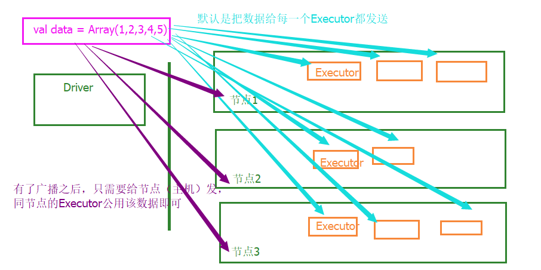
广播变量用来高效分发较大的对象。向所有工作节点发送一个较大的只读值，以供一个或多个Spark 操作使用。比如，如果你的应用需要向所有节点发送一个较大的只读查询表，甚至是机器学习算法中的一个很大的特征向量，广播变量用起来都很顺手。
传统方式下，Spark 会自动把闭包中所有引用到的变量发送到工作节点上。虽然这很方便，但也很低效。原因有二:首先，默认的任务发射机制是专门为小任务进行优化的；其次，事实上你可能会在多个并行操作中使用同一个变量，但是 Spark会为每个任务分别发送。
// 直接调用broadcast就广播出去了
scala> val broadcastVar = sc.broadcast(Array(1, 2, 3))
broadcastVar: org.apache.spark.broadcast.Broadcast[Array[Int]] =
Broadcast(35)
// 获取值
scala> broadcastVar.value
res33: Array[Int] = Array(1, 2, 3)
使用广播变量的过程如下：
(1) 通过对一个类型 T 的对象调用
SparkContext.broadcast 创建出一个 Broadcast[T] 对象。 任何可序列化的类型都可以这么实现。
(2) 通过 value 属性访问该对象的值(在 Java 中为 value() 方法)。
(3) 变量只会被发到各个节点一次，应作为只读值处理(修改这个值不会影响到别的节点)。
Spark SQL
Spark SQL概述
SparkSQL是什么
Spark与Hive的底层不一样
SparkCore的数据抽象是RDD，SparkSQL的数据抽象是DataFrame、DataSet。这三者可以相互转换，RDD不想写了，可以写SQL，学完了这三者的转换就学完了SparkSQL。
RDD、DataFrame、DataSet
RDD只关心一行行的数据，具体一行有什么列，RDD是不知道的，DataFrame还知道你有什么列，列名是什么，DataSet还知道你这个列是什么类型的。
DataSet有RDD的所有方法，3.0版本之后，DataSet有一统江湖的趋势。


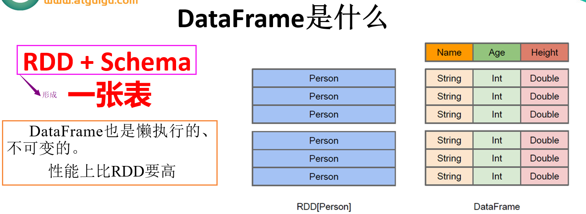
性能上比RDD要高：
DataFrame因为没有类型，所以可以随便写，编译不报错，但是运行的时候类型不对会报错。Dataframe的劣势在于在编译期缺少类型安全检查，运行期检查。
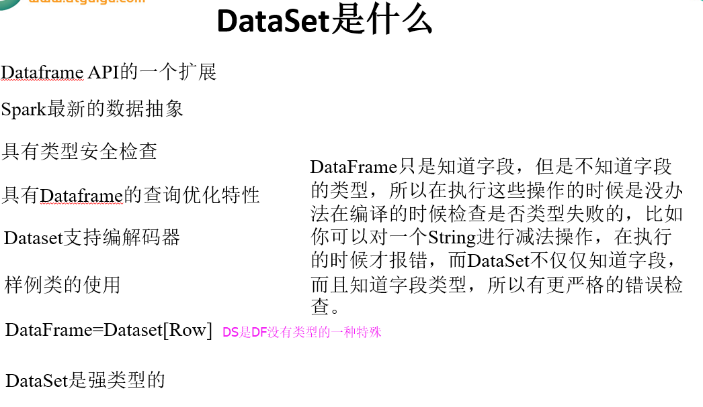
SparkSQL查询
命令行操作
小插曲
HDFS每次启动都一直都是进入安全模式，页面首页有下面这种提示，每次都要手动离开安全模式，故把数据都删除了，重启就自动离开安全模式了。据说是断电之后，有部分块数据损坏了，导致阈值问题。
Safe mode is ON. The
reported blocks 18 needs additional 289 blocks to reach the threshold 0.9990 of
total blocks 307. The number of live datanodes 3 has reached the minimum number
0.
读json
前面提到过运行spark-shell的时候，可以看到SparkSession，简写为spark，这个就是SparkSQL的。
官网上的测试数据，注意json数据的大括号要在一行上。
|
{"name":"Michael"} {"name":"Andy",
"age":30} {"name":"Justin",
"age":19} |
使用read.json读一个json，可以看到转成了DataFrame，有字段age、name
|
scala>
spark.read.json("file:///usr/local/spark2.1.1/examples/src/main/resources/people.json")
res0:
org.apache.spark.sql.DataFrame = [age: bigint, name: string] // 表结构 scala> res0.show +----+-------+ | age| name| +----+-------+ |null|Michael| | 30| Andy| | 19| Justin| +----+-------+ |
获取值可以用DSL、SQL两种风格
DSL
这种DSL风格比较少用
|
scala>
spark.read.json("file:///usr/local/spark2.1.1/examples/src/main/resources/people.json")
res0:
org.apache.spark.sql.DataFrame = [age: bigint,
name: string] // 也是懒执行，所以要用show scala> res0.select("name").show +-------+ | name| +-------+ |Michael| | Andy| | Justin| +-------+ // 要加减乘除等操作字段，要在前面加$，否则报错 scala> res0.select($"age" + 1).show +---------+ |(age + 1)| +---------+ | null| | 31| | 20| +---------+ // 只要有一个字段有操作行为，其他字段都要加$，否则报错 scala> res0.select($"age" + 1,
$"name").show +---------+-------+ |(age + 1)| name| +---------+-------+ | null|Michael| | 31| Andy| | 20| Justin| +---------+-------+ // 不操作字段，加$也不会报错 scala> res0.select($"name").show +-------+ | name| +-------+ |Michael| | Andy| | Justin| +-------+ scala> res0.first res5: org.apache.spark.sql.Row = [null,Michael] // 过滤器 scala> res0.filter($"age" > 20).show +---+----+ |age|name| +---+----+ | 30|Andy| +---+----+ // res0. + 回车 + Tab键，就可以看到很多方法 scala> res0. | agg createTempView foreach mapPartitions schema toJavaRDD alias crossJoin foreachPartition na select toLocalIterator apply cube groupBy orderBy selectExpr toString as describe groupByKey persist show transform cache distinct head printSchema sort union checkpoint drop inputFiles queryExecution sortWithinPartitions unionAll coalesce dropDuplicates intersect randomSplit sparkSession unpersist col dtypes isLocal randomSplitAsList sqlContext where collect except isStreaming rdd stat withColumn collectAsList explain javaRDD reduce storageLevel withColumnRenamed columns explode join registerTempTable take withWatermark count filter joinWith repartition takeAsList write createGlobalTempView first limit rollup toDF writeStream createOrReplaceTempView flatMap map sample toJSON | show // 最后随便输入一个方法，即可退出就行 +----+-------+ | age| name| +----+-------+ |null|Michael| | 30| Andy| | 19| Justin| +----+-------+ |
SQL
外部读取文件之后，获取值的方式比较多用SQL风格。
|
scala>
spark.read.json("file:///usr/local/spark2.1.1/examples/src/main/resources/people.json")
res0:
org.apache.spark.sql.DataFrame = [age: bigint,
name: string] // 创建一个表，表名为people scala> res0.createTempView("people") spark.sql里面就是SQL语句了 scala> spark.sql("select * from people").show +----+-------+ | age| name| +----+-------+ |null|Michael| | 30| Andy| | 19| Justin| +----+-------+ scala> spark.sql("select * from people where age >
20").show +---+----+ |age|name| +---+----+ | 30|Andy| +---+----+ |
IDEA创建SparkSQL程序
在原来spark项目新建一个module，注意目录要选择spark下新建sparkSQL目录
加依赖，我在最外面的pom.xml加
就之前的测试数据people.json
代码
|
import org.apache.spark.sql.SparkSession |
运行之后打印日志，会掺杂很多调试日志
|
+----+-------+ | age| name| +----+-------+ |null|Michael| | 30| Andy| | 19| Justin| +----+-------+ +-------+ | name| +-------+ |Michael| | Andy| | Justin| +-------+ +----+-------+ | age| name| +----+-------+ |null|Michael| | 30| Andy| | 19| Justin| +----+-------+ |
不想打印那么多调试日志就整个log4j.properties过来放resources，修改一下
RDD、DataFrame、DataSet转换
从复杂的数据转简单的很方便，但从简单的数据转复杂的就要补充缺失的内容。
准备官网给的测试数据people.txt
|
Michael, 29 Andy, 30 Justin, 19 |
RDD转DataFrame
1、补充字段
|
// 从文件读取数据 scala> val rdd =
sc.textFile("file:///usr/local/spark2.1.1/examples/src/main/resources/people.txt") rdd: org.apache.spark.rdd.RDD[String]
= file:///.../people.txt MapPartitionsRDD[32] at textFile at
<console>:24 scala> rdd.collect // 字符串的RDD res12: Array[String] = Array(Michael, 29, Andy, 30,
Justin, 19) // 这是kv对了，即转成了二元组。trim是去空格 scala> val kvRdd = rdd.map{x => val pa =
x.split(",");(pa(0).trim, pa(1).trim)} kvRdd: org.apache.spark.rdd.RDD[(String, String)] =
MapPartitionsRDD[42] at map at <console>:26 // 看一下 scala> kvRdd.collect res19: Array[(String, String)] =
Array((Michael,29), (Andy,30), (Justin,19)) // 转成二元组就可以toDF，转成了DataFrame，可以通过按tab键查看可选的方法 scala> kvRdd.toDF("name",
"age") res14: org.apache.spark.sql.DataFrame =
[name: string, age: string] scala> res14.show +-------+---+ | name|age| +-------+---+ |Michael| 29| | Andy| 30| | Justin| 19| +-------+---+ |
2、样例类的反射方式
|
// 从文件读取数据 scala> val rdd =
sc.textFile("file:///usr/local/spark2.1.1/examples/src/main/resources/people.txt") rdd: org.apache.spark.rdd.RDD[String]
= file:///.../people.txt MapPartitionsRDD[32] at textFile at
<console>:24 scala> rdd.collect // 字符串的RDD res12: Array[String] = Array(Michael, 29, Andy, 30,
Justin, 19) // 声明一个样例类 scala> case class People(name:String,
age:String) defined class People scala> rdd.map{x => val pa =
x.split(",");People(pa(0).trim, pa(1).trim)}.collect res27: Array[People] = Array(People(Michael,29),
People(Andy,30), People(Justin,19)) // 有了样例类就不用写字段了，可直接转 scala> rdd.map{x => val pa =
x.split(",");People(pa(0).trim, pa(1).trim)}.toDF res23: org.apache.spark.sql.DataFrame =
[name: string, age: string] scala> res23.show +-------+---+ | name|age| +-------+---+ |Michael| 29| | Andy| 30| | Justin| 19| +-------+---+ |
如果不用样例类就会默认转成这种
|
scala> kvRdd.toDF res21: org.apache.spark.sql.DataFrame = [_1:
string, _2: string] |
3、编程动态引入
这种方法比较复杂，看完其他的再回头看。
本来是编程用的，这里用shell模拟一下。
如果case类不能够提前定义，可以通过下面三个步骤定义一个DataFrame：
创建一个多行结构的RDD;
创建用StructType来表示的行结构信息；
通过SparkSession提供的createDataFrame方法来应用Schema 。
|
// 读取文件转成rdd scala> val rdd =
sc.textFile("file:///usr/local/spark2.1.1/examples/src/main/resources/people.txt") rdd: org.apache.spark.rdd.RDD[String] =
file:///...s/people.txt MapPartitionsRDD[68] at textFile at
<console>:24 // 这本来要从MySQL数据获取字段的数据的，而且字段名也不需要写死了，仅仅简单模拟，这就是case类不能提前定义的意思 scala> val schemaString = "name
age" schemaString: String = name age scala> rdd.map{x=> val
pa=x.split(",");org.apache.spark.sql.Row(pa(0).trim,pa(1).trim)}.collect res46: Array[org.apache.spark.sql.Row] =
Array([Michael,29], [Andy,30], [Justin,19]) // kv对 scala> val row = rdd.map{x=> val
pa=x.split(",");org.apache.spark.sql.Row(pa(0).trim,pa(1).trim)} row:
org.apache.spark.rdd.RDD[org.apache.spark.sql.Row] = MapPartitionsRDD[71] at
map at <console>:26 // 导入，后面nullable用到 scala> import org.apache.spark.sql.types._ import org.apache.spark.sql.types._ // fieldName属性名 scala> val fields =
schemaString.split(" ").map(fieldName => StructField(fieldName,
StringType, nullable = true)) fields: Array[org.apache.spark.sql.types.StructField]
= Array(StructField(name,StringType,true), StructField(age,StringType,true)) // 映射成StructType scala> val schema = StructType(fields) schema: org.apache.spark.sql.types.StructType
= StructType(StructField(name,StringType,true),
StructField(age,StringType,true)) scala> spark.createDataFrame(row, schema) res47: org.apache.spark.sql.DataFrame = [name:
string, age: string] scala> res47.show +-------+---+ |
name|age| +-------+---+ |Michael| 29| |
Andy| 30| | Justin| 19| +-------+---+ |
RDD转DataSet
|
// 从文件读取数据 scala> val rdd =
sc.textFile("file:///usr/local/spark2.1.1/examples/src/main/resources/people.txt") rdd: org.apache.spark.rdd.RDD[String]
= file:///.../people.txt MapPartitionsRDD[32] at textFile at
<console>:24 scala> rdd.collect // 字符串的RDD res12: Array[String] = Array(Michael, 29, Andy, 30,
Justin, 19) // 声明一个样例类 scala> case class People(name:String,
age:String) defined class People scala> rdd.map{x => val pa =
x.split(",");People(pa(0).trim, pa(1).trim)}.collect res27: Array[People] = Array(People(Michael,29),
People(Andy,30), People(Justin,19)) // 直接就能转DS scala> rdd.map{x => val pa =
x.split(",");People(pa(0).trim, pa(1).trim)}.toDS res25: org.apache.spark.sql.Dataset[People]
= [name: string, age: string] scala> res25.show +-------+---+ | name|age| +-------+---+ |Michael| 29| | Andy| 30| | Justin| 19| +-------+---+ |
如果不用样例类就会默认转成这种
|
scala> rdd.map{x => val pa =
x.split(",");(pa(0).trim, pa(1).trim)}.toDS res17: org.apache.spark.sql.Dataset[(String,
String)] = [_1: string, _2: string] |
DataFrame转RDD
|
// 从文件读取数据 scala> val rdd =
sc.textFile("file:///usr/local/spark2.1.1/examples/src/main/resources/people.txt") rdd: org.apache.spark.rdd.RDD[String]
= file:///.../people.txt MapPartitionsRDD[32] at textFile at
<console>:24 scala> rdd.collect // 字符串的RDD res12: Array[String] = Array(Michael, 29, Andy, 30,
Justin, 19) // 这是kv对了，即转成了二元组。trim是去空格 scala> val kvRdd = rdd.map{x => val pa =
x.split(",");(pa(0).trim, pa(1).trim)} kvRdd: org.apache.spark.rdd.RDD[(String, String)] =
MapPartitionsRDD[42] at map at <console>:26 // 看一下 scala> kvRdd.collect res19: Array[(String, String)] =
Array((Michael,29), (Andy,30), (Justin,19)) // 转成二元组就可以toDF，转成了DataFrame，可以通过按tab键查看可选的方法 scala> val df =
kvRdd.toDF("name", "age") df: org.apache.spark.sql.DataFrame =
[name: string, age: string] // 直接转 scala> df.rdd res29: org.apache.spark.rdd.RDD[org.apache.spark.sql.Row]
= MapPartitionsRDD[55] at rdd at <console>:31 scala> res29.collect res30: Array[org.apache.spark.sql.Row] =
Array([Michael,29], [Andy,30], [Justin,19]) |
Row类似于MySQL的ResultSet
|
// df转rdd之后，怎么获取值 scala> df.rdd res29: org.apache.spark.rdd.RDD[org.apache.spark.sql.Row]
= MapPartitionsRDD[55] at rdd at <console>:31 scala> res29.collect res30: Array[org.apache.spark.sql.Row] =
Array([Michael,29], [Andy,30], [Justin,19]) // 获取第一列的 scala> res29.map(_.getString(0)).collect res37: Array[String] = Array(Michael, Andy, Justin) scala> res29.map(_.getString(1)).collect res38: Array[String] = Array(29, 30, 19) // 另一个获取值的方式 scala> res29.map(_.getAs[String](0)).collect res39: Array[String] = Array(Michael, Andy, Justin) // 获取值，类型不对的话，编译期间不会报错，运行时报错 scala> res29.map(_.getAs[Int](0)).collect 报错：java.lang.ClassCastException: java.lang.String cannot be cast to java.lang.Integer |
DataFrame转DataSet
|
// 从文件读取数据 scala> val rdd =
sc.textFile("file:///usr/local/spark2.1.1/examples/src/main/resources/people.txt") rdd: org.apache.spark.rdd.RDD[String]
= file:///.../people.txt MapPartitionsRDD[32] at textFile at
<console>:24 scala> rdd.collect // 字符串的RDD res12: Array[String] = Array(Michael, 29, Andy, 30,
Justin, 19) // 这是kv对了，即转成了二元组。trim是去空格 scala> val kvRdd = rdd.map{x => val pa = x.split(",");(pa(0).trim,
pa(1).trim)} kvRdd: org.apache.spark.rdd.RDD[(String, String)] =
MapPartitionsRDD[42] at map at <console>:26 // 看一下 scala> kvRdd.collect res19: Array[(String, String)] =
Array((Michael,29), (Andy,30), (Justin,19)) // 转成二元组就可以toDF，转成了DataFrame，可以通过按tab键查看可选的方法 scala> kvRdd.toDF("name",
"age") res14: org.apache.spark.sql.DataFrame = [name:
string, age: string] scala> val df =
kvRdd.toDF("name", "age") df: org.apache.spark.sql.DataFrame =
[name: string, age: string] // 声明一个样例类 scala> case class People(name:String,
age:String) defined class People // 注意，样例类的列名与df的要一样，否则转会报错 scala> df.as[People] res41: org.apache.spark.sql.Dataset[People]
= [name: string, age: string] scala> res41.show +-------+---+ | name|age| +-------+---+ |Michael| 29| | Andy| 30| | Justin| 19| +-------+---+ |
DataSet转RDD
|
// 从文件读取数据 scala> val rdd =
sc.textFile("file:///usr/local/spark2.1.1/examples/src/main/resources/people.txt") rdd: org.apache.spark.rdd.RDD[String] = file:///.../people.txt
MapPartitionsRDD[32] at textFile at <console>:24 scala> rdd.collect // 字符串的RDD res12: Array[String] = Array(Michael, 29, Andy, 30,
Justin, 19) // 声明一个样例类 scala> case class People(name:String,
age:String) defined class People // 转DS scala> val ds =
rdd.map{x => val pa = x.split(",");People(pa(0).trim,
pa(1).trim)}.toDS ds: org.apache.spark.sql.Dataset[People]
= [name: string, age: string] // 直接转 scala> ds.rdd res31: org.apache.spark.rdd.RDD[People]
= MapPartitionsRDD[58] at rdd at <console>:31 scala> res31.collect res32: Array[People] = Array(People(Michael,29),
People(Andy,30), People(Justin,19)) // 点的时候按tab键就可以看到很多，其中就有age、name scala> res31.map(_. age copy hashCode productArity productIterator toString
canEqual
equals name productElement productPrefix // 获取值，类型不对的话，编译期间就会报错 scala> res31.map(_.name).collect res33: Array[String] = Array(Michael, Andy, Justin) |
DataSet转DataFrame
|
// 从文件读取数据 scala> val rdd =
sc.textFile("file:///usr/local/spark2.1.1/examples/src/main/resources/people.txt") rdd: org.apache.spark.rdd.RDD[String] = file:///.../people.txt
MapPartitionsRDD[32] at textFile at <console>:24 scala> rdd.collect // 字符串的RDD res12: Array[String] = Array(Michael, 29, Andy, 30,
Justin, 19) // 声明一个样例类 scala> case class People(name:String,
age:String) defined class People // 转DS scala> val ds =
rdd.map{x => val pa = x.split(",");People(pa(0).trim,
pa(1).trim)}.toDS ds: org.apache.spark.sql.Dataset[People]
= [name: string, age: string] scala> ds.toDF res34: org.apache.spark.sql.DataFrame =
[name: string, age: string] |
用户自定义函数
自定义UDF函数
|
// 读之前的json，得到DF scala> val df =
spark.read.json("file:///usr/local/spark2.1.1/examples/src/main/resources/people.json") df: org.apache.spark.sql.DataFrame = [age:
bigint, name: string] // 创建表 scala>
df.createTempView("df_people") // 看一下 scala> spark.sql("select * from
df_people").show +----+-------+ | age|
name| +----+-------+ |null|Michael| |
30| Andy| | 19|
Justin| +----+-------+ // 注册一个函数。addName是函数名；(x:String) => "name:" + x是一个函数，即在数据前面加上“name:” scala>
spark.udf.register("addName", (x:String) => "name:" +
x) res52:
org.apache.spark.sql.expressions.UserDefinedFunction =
UserDefinedFunction(<function1>,StringType,Some(List(StringType))) // 使用addName函数 scala> spark.sql("select addName(name) as name from df_people").show +------------+ |
name| +------------+ |name:Michael| | name:Andy| | name:Justin| +------------+ |
自定义UDAF函数（聚合函数）
强类型的Dataset和弱类型的DataFrame都提供了相关的聚合函数， 如 count()，countDistinct()，avg()，max()，min()。除此之外，用户可以设定自己的自定义聚合函数。
弱类型DataFrame
弱类型(DataFrame)用户自定义聚合函数：通过继承UserDefinedAggregateFunction来实现用户自定义聚合函数。下面展示一个求平均工资的自定义聚合函数。
准备数据
代码
import org.apache.spark.SparkConf |
输出结果，得出所有人的平均工资
对比下数据
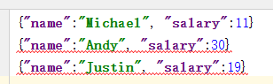
强类型Dataset
直接复制的，没有试过。
强类型(Dataset)用户自定义聚合函数：通过继承Aggregator来实现强类型自定义聚合函数，同样是求平均工资
import org.apache.spark.sql.expressions.Aggregator
import org.apache.spark.sql.Encoder
import
org.apache.spark.sql.Encoders
import org.apache.spark.sql.SparkSession
// 既然是强类型，可能有case类
case class Employee(name: String, salary: Long)
case class Average(var sum: Long, var count: Long)
object MyAverage extends Aggregator[Employee, Average,
Double] {
// 定义一个数据结构，保存工资总数和工资总个数，初始都为0
def zero: Average = Average(0L, 0L)
// Combine two values to produce a new value. For performance, the function may
modify `buffer`
// and return it instead of constructing a new object
def reduce(buffer: Average, employee: Employee): Average = {
buffer.sum += employee.salary
buffer.count += 1
buffer
}
// 聚合不同execute的结果
def merge(b1: Average, b2: Average): Average = {
b1.sum += b2.sum
b1.count += b2.count
b1
}
// 计算输出
def finish(reduction: Average): Double = reduction.sum.toDouble /
reduction.count
// 设定之间值类型的编码器，要转换成case类
// Encoders.product是进行scala元组和case类转换的编码器
def bufferEncoder: Encoder[Average] = Encoders.product
// 设定最终输出值的编码器
def outputEncoder: Encoder[Double] = Encoders.scalaDouble
}
import spark.implicits._
val
ds =
spark.read.json("examples/src/main/resources/employees.json").as[Employee]
ds.show()
// +-------+------+
// | name|salary|
// +-------+------+
// |Michael| 3000|
// | Andy| 4500|
// | Justin| 3500|
// | Berta| 4000|
// +-------+------+
// Convert the function to a `TypedColumn` and give it a name
val averageSalary = MyAverage.toColumn.name("average_salary")
val result = ds.select(averageSalary)
result.show()
// +--------------+
// |average_salary|
// +--------------+
// | 3750.0|
// +--------------+
Hive数据库
Apache Hive是Hadoop上的SQL引擎，Spark SQL编译时可以包含Hive支持，也可以不包含。包含Hive支持的Spark SQL可以支持Hive表访问、UDF(用户自定义函数)以及 Hive 查询语言(HiveQL/HQL)等。需要强调的 一点是，如果要在Spark SQL中包含Hive的库，并不需要事先安装Hive。一般来说，最好还是在编译Spark SQL时引入Hive支持，这样就可以使用这些特性了。如果你下载的是二进制版本的 Spark，它应该已经在编译时添加了 Hive 支持。
若要把Spark SQL连接到一个部署好的Hive上，你必须把hive-site.xml复制到 Spark的配置文件目录中($SPARK_HOME/conf)。即使没有部署好Hive，Spark SQL也可以运行。 需要注意的是，如果你没有部署好Hive，Spark SQL会在当前的工作目录中创建出自己的Hive 元数据仓库，叫作 metastore_db。此外，如果你尝试使用 HiveQL 中的 CREATE TABLE (并非 CREATE EXTERNAL TABLE)语句来创建表，这些表会被放在你默认的文件系统中的 /user/hive/warehouse 目录中(如果你的 classpath 中有配好的 hdfs-site.xml，默认的文件系统就是 HDFS，否则就是本地文件系统)。
内嵌的Hive与外部的Hive只能二选一使用，否则会冲突。
内嵌Hive应用
如果要使用内嵌的Hive，什么都不用做，直接用就可以了。 （bin/spark-shell）
注意：如果你使用的是内部的Hive，在Spark2.0之后，spark.sql.warehouse.dir用于指定数据仓库的地址，如果你需要用HDFS作为路径，那么需要将core-site.xml和hdfs-site.xml 加入到Spark conf目录，否则只会创建master节点上的warehouse目录，查询时可能会出现文件找不到的问题，要想使用HDFS，则需要将metastore删除，重启集群。
默认只在master节点上（之前操作过sparksql）
如果load的文件只在master有，那么可能会报错，所以一般使用HDFS的文件
重点讲一下内置Hive用HDFS作为存储路径：
1、启动HDFS集群
start-dfs.sh
2、启动spark集群（不启动就用local模式）
[root@master spark2.1.1]# sbin/start-all.sh
2、复制HDFS配置文件到spark的conf目录
3、删除原来master产生的数据
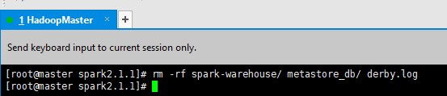
4、spark-shell指定--conf参数：--conf spark.sql.warehouse.dir=xxxx
这样spark集群都可以访问HDFS读取数据了，启动第一次要指定--conf，以后就都不用了指定了
|
[root@master spark2.1.1]#
bin/spark-shell --master spark://master:7077 --conf spark.sql.warehouse.dir=hdfs://master:9000/spark 或者本地 [root@master spark2.1.1]# bin/spark-shell --conf spark.sql.warehouse.dir=hdfs://master:9000/spark |
官方测试数据准备 kv1.txt
|
[root@master resources]# pwd /usr/local/spark2.1.1/examples/src/main/resources [root@master resources]# ll 总用量 36 -rw-r--r--. 1 500 500 130 4月 26
2017 employees.json -rw-r--r--. 1 500 500 240 4月 26
2017 full_user.avsc -rw-r--r--. 1 500 500 5812 4月 26
2017 kv1.txt -rw-r--r--. 1 500 500 73 4月 26
2017 people.json -rw-r--r--. 1 500 500 32 4月 26
2017 people.txt -rw-r--r--. 1 500 500 185 4月 26
2017 user.avsc -rw-r--r--. 1 500 500 334 4月 26
2017 users.avro -rw-r--r--. 1 500 500 615 4月 26
2017 users.parquet [root@master resources]# hadoop fs -put kv1.txt / |
这就是用Hive的SQL
|
scala> import spark.implicits._ import spark.implicits._ scala> spark.sql("create table kv(key
Int, value String)") 19/07/23 18:13:38 WARN
metastore.HiveMetaStore: Location: hdfs://master:9000/spark/kv specified for
non-external table:kv res0: org.apache.spark.sql.DataFrame = [] scala> spark.sql("load data inpath
'/kv1.txt' into table kv") 19/07/23 18:13:44 ERROR hdfs.KeyProviderCache:
Could not find uri with key [dfs.encryption.key.provider.uri] to create a
keyProvider !! res1: org.apache.spark.sql.DataFrame = [] scala> spark.sql("select * from
kv").show +---+-------+ |key|
value| +---+-------+ |238|val_238| | 86| val_86| |311|val_311| | 27| val_27| |165|val_165| |409|val_409| |255|val_255| |278|val_278| | 98| val_98| |484|val_484| |265|val_265| |193|val_193| |401|val_401| |150|val_150| |273|val_273| |224|val_224| |369|val_369| | 66| val_66| |128|val_128| |213|val_213| +---+-------+ only showing top 20 rows |
访问HDFS页面：http://192.168.56.100:50070/explorer.html#/ ，可以看到/spark目录下有kv1.（这个后来被我删除了，就不截图了）
外部Hive应用
Spark接管Hive。
1、启动hdfs集群
2、将Hive中的hive-site.xml拷贝或者软连接到Spark安装目录下的conf目录下。Hive只是一个客户端，我的集群也就只有master主机有Hive，其他没有，该配置文件不需要spark集群都有。
3、启动spark集群
我的spark集群是HA模式

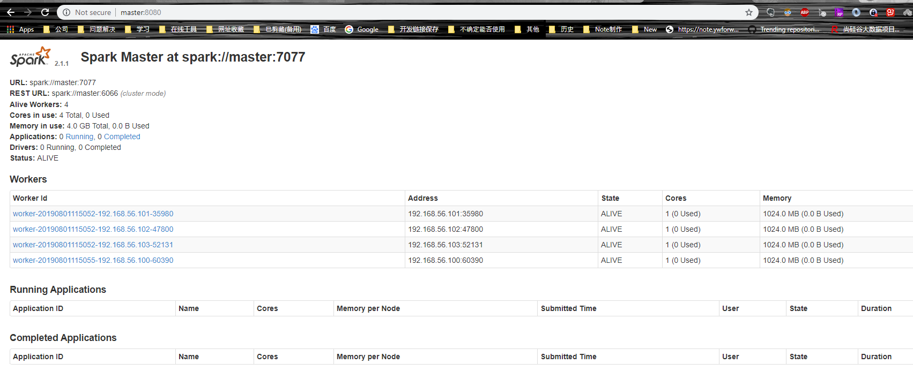
此时只有一个目录

我的spark用的HA模式，所以连接两个master
创建一个表
就可以看到创建表的元数据就在这里了
把hive-site.xml配置文件放到spark的conf目录下，用的就是外部的Hive，此时就不能用内部的Hive了。外部Hive与内部Hive的区分可以看数据的存放目录。
如果Hive的元数据存放到MySQL，则需要在Spark集群导入MySQL驱动包：
进入jars目录，上传mysql驱动包（因为真正执行的是Executor）
Hive底层走的MapReduce，而Spark底层走的RDD，所以Spark接管Hive查询效率更高。但是Hive在数据仓库上Spark是暂时无法替代的。
spark-sql
这就很像hive了
直接写SQL语句即可，而且还有提示
但是有很多日志，在spark的conf目录有个log4j模板
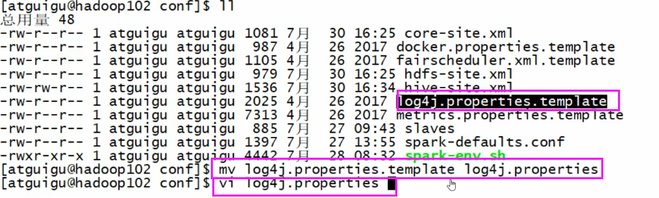
由info改为error或者warn
重新运行
就可以看到没有其他日志了
Spark Streaming
Spark Streaming概述
小插曲：
Impala也是写SQL的，在HDFS系统上搭建一个MySQL，速度比Hive的MapReduce快很多。
Storm是实时处理，一条条数据的，但是Storm在走下坡路。
Kylin(麒麟)是国内人开发的，Apache顶级项目之一。
一般用法，所以Kafka到SparkStreaming很重要。
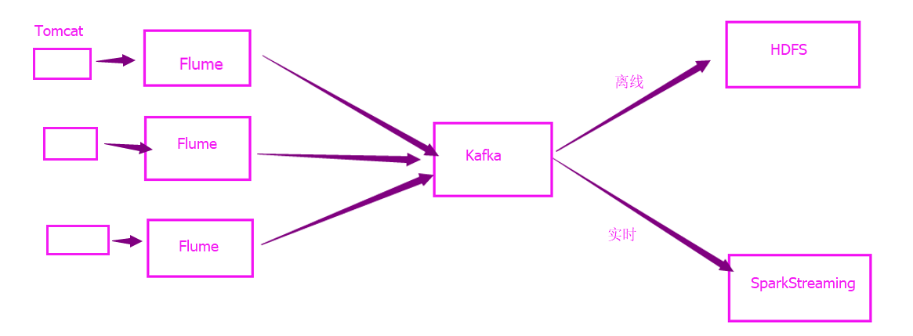
无状态就是上一次的结果不会对本次有影响，有状态就是上一次的结果会直接影响本次的结果。
IDEA编写SparkStreaming程序
流式数据进行单词统计
新建模块
这次要随便整一个log4j.properties了，把日志级别改为error，不然很多日志输出
log4j.rootLogger=error, stdout |
代码WordCount.scala
import org.apache.spark.SparkConf |
安装Netcat
[root@master spark2.1.1]#
yum install nc
启动Netcat（这台master就是192.168.56.100）
运行程序，测试发送数据，默认是无状态转换，时间戳是自动打印的
自定义接收器
所继承的Receiver的所有方法
代码
CustomerReceiver.scala
import java.io.{BufferedReader, InputStreamReader} |
WordCountForReceiver.scala
import org.apache.spark.SparkConf
|
运行程序，nc发送数据，自定义的接收器从nc的9999端口接收数据，同样是无状态的
有状态转换
有状态转换的，第一批数据过来会生成一个checkpoint，第二批数据过来就会与上一次checkpoint的结果合并，生成新的checkpoint。
PairDStreamFunctions.scala的源码的updateStateByKey方法的源码，Seq就是新进来的数据，Option是上一次保存的数据
代码
CustomerReceiver.scala 与前一小节的一样
package stateful |
WordCountForReceiver.scala
package stateful |
运行程序，nc发送数据，可以看到是有状态转换了
Window Operations
先理解一些概念。
一个小块是最小批次，假设5秒的数据作为一个小块（最小批次），而窗口大小为3就是5*3=15秒，即3个最小批次；步长为2就是经过了两个最小批次，即5*2=10秒。
1）窗口大小等于步长
窗口大小等于步长等于3的时候，每次计算都是计算新的数据。
应用场景：
比如每一分钟显示一分钟内有多少访问量。如果最小批次为10秒，那么窗口大小就可以为10 * 6 = 60秒，步长也是60秒。
2）窗口大小大于步长
应用场景：
比如每五分钟刷新一下一小时内有多少访问量。假设最小批次为5分钟，那么窗口大小就是5 * 12 = 60分钟，而步长为5分钟，得到下图，这是中间的一个过程。
当然，一开始的时候，步长为5分钟，但窗口大小为60分钟，当步长触发计算的时候，肯定无法满足窗口大小为60分钟的，窗口大小是可以小于设定的窗口大小。
这是官网图，后面的描述是复制教程的。
Window
Operations有点类似于Storm中的State，可以设置窗口的大小和滑动窗口的间隔来动态的获取当前Steaming的允许状态。
基于窗口的操作会在一个比 StreamingContext 的批次间隔更长的时间范围内，通过整合多个批次的结果，计算出整个窗口的结果。
所有基于窗口的操作都需要两个参数，分别为窗口时长以及滑动步长，两者都必须是 StreamContext 的批次间隔的整数倍（就是不能2.5个最小批次作为一个窗口大小，因为最小批次已经是设置为最小批了，有需要就改小最小批次的大小）。窗口时长控制每次计算最近的多少个批次的数据，其实就是最近的 windowDuration/batchInterval 个批次。如果有一个以 10 秒为批次间隔的源 DStream，要创建一个最近 30 秒的时间窗口(即最近 3 个批次)，就应当把 windowDuration 设为 30 秒。而滑动步长的默认值与批次间隔相等，用来控制对新的 DStream 进行计算的间隔。
代码
窗口大小等于步长
WordCount.scala
package window |
运行程序、nc，有多少数据发送过来，打印就会有多少
对比一下，把步长由原来的3改为2，窗口大小还是3
运行程序，总共发了9个a，但是打印有12个，说明一部分是重复的。所以窗口大小大于步长的不能用这种直接叠加的方法
窗口大小大于步长
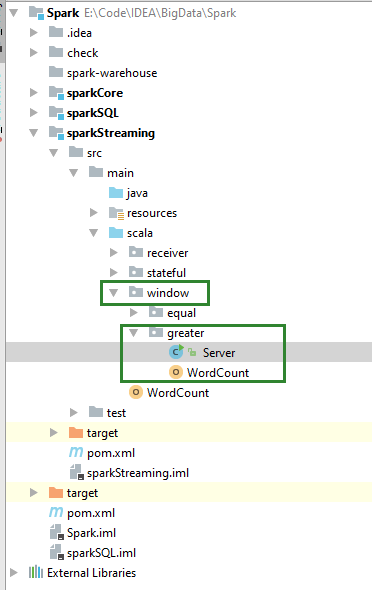
写了个定时发送数据的服务器，不适用Netcat，最后测试结果还是没有实现好
Server.java
package window.greater; |
WordCount.scala
package window.greater |
运行Server类服务器，然后再运行WordCount程序，可以看到计算a出现的个数

然后再把Server类的letter变量改一下
再运行一下
这样看不出来速度，应该在计算a的个数的前后算一个时间，然后跟直接累加的前后结果对比一下。
这个是累加新的，减去旧的
这是直接累加的
但是我试着打印时间戳，没有打印结果，使用累加器用print也没有任何输出，所以这问题暂时留着，可能学到后面这个问题就迎刃而解了。
图解，但数值不对应
高级数据源
Kafka
除核心数据源外，还可以用附加数据源接收器来从一些知名数据获取系统中接收的数据，这些接收器都作为Spark Streaming的组件进行独立打包了。它们仍然是Spark的一部分，不过你需要在构建文件中添加额外的包才能使用它们。现有的接收器包括 Twitter、Apache Kafka、Amazon Kinesis、Apache Flume，以及ZeroMQ。可以通过添加与Spark版本匹配 的 Maven 工件 spark-streaming-[projectname]_2.10 来引入这些附加接收器。
演示SparkStreaming如何从Kafka读取消息，把消息处理完成后再写回Kafka（此时SparkStreaming是生产者，把该生产者做成一个池），让消费者消费。
高级API可能会丢失数据，而低级API处理完逻辑再更新offset，不会丢失。手动维护offset，保证机器挂了，数据不会丢失，手动维护到offset到Zookeeper即可。
代码
pom.xml
|
<?xml version="1.0" encoding="UTF-8"?> |
KafkaUtils.createDirectStream()的源码
KafkaProxy.scala
|
package kafka |
KafkaStreaming.scala
|
package kafka |
测试
启动Zookeeper集群
启动Kafka集群
创建source主题（注意，这里的操作中，参数、端口比较错乱的感觉，不要搞错）
|
[root@slave1 ~]# /usr/local/kafka/bin/kafka-topics.sh --zookeeper slave1:2181 --create
--replication-factor 1 --partitions 2 --topic source |
启动生产者
|
[root@slave1 ~]# /usr/local/kafka/bin/kafka-console-producer.sh --broker-list slave1:9092 --topic
source |
创建target主题（如果忘记了创建，则SparkStreaming无法发送数据到target，消费者也无法从target消费数据，哪怕程序不报错）
|
[root@slave1 ~]# /usr/local/kafka/bin/kafka-topics.sh --zookeeper slave1:2181
--create --replication-factor 1 --partitions 2 --topic target |
启动消费者
|
[root@slave1 ~]#
/usr/local/kafka/bin/kafka-console-consumer.sh --bootstrap-server
slave1:9092 --from-beginning --topic target |
启动程序
消费会有点慢，因为批处理设置了5秒。
Kafka控制台的生产者往source主题生产了消息，然后被SparkStreaming消费了（其实也是Kafka的API），SparkStreaming消费消息之后，作为Kafka的生产者（其实也是Kafka的API），往target主题生产消息，被Kafka控制台的消费者消费。
（看不到offset在zk哪里？）
手动维护Kafka的offset
尽管测试过了，但是没看到维护的offset在哪里？
代码
KafkaProxy.scala
|
package offset |
KafkaStreaming.scala
|
package offset |
测试
启动生产者、消费者、程序，可以看到下图输出（有上次的测试数据）

Spark内核机制
见“09_Spark内核解析.docx”
Spark性能调优
见“10_Spark性能调优与故障处理.docx”